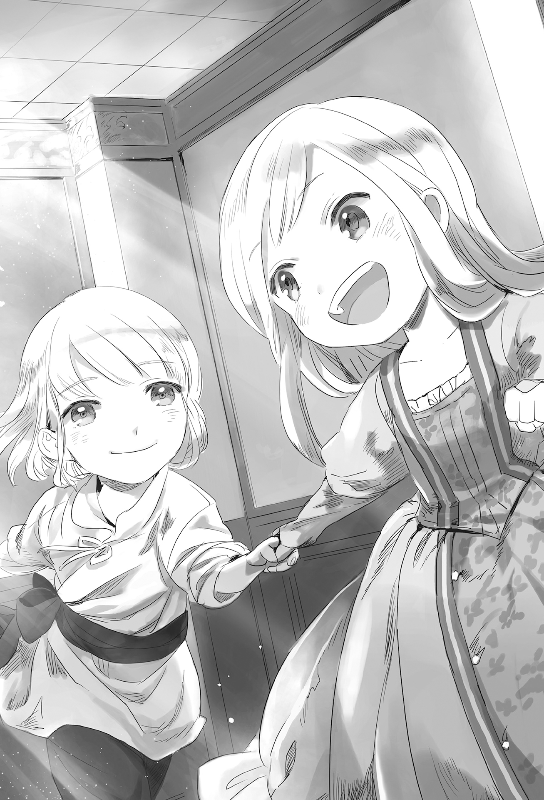
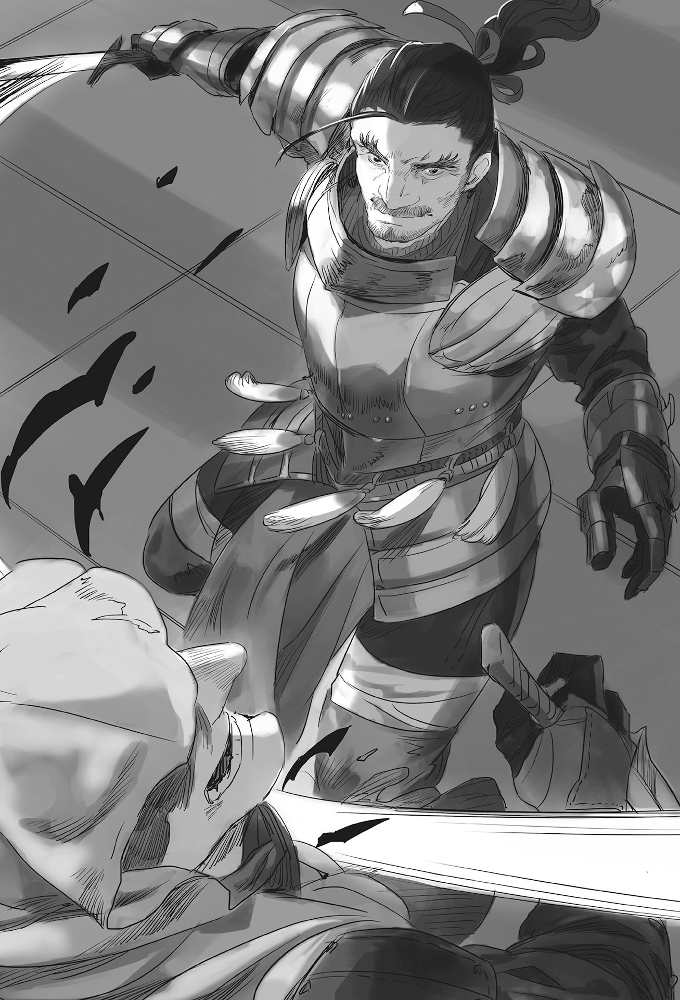
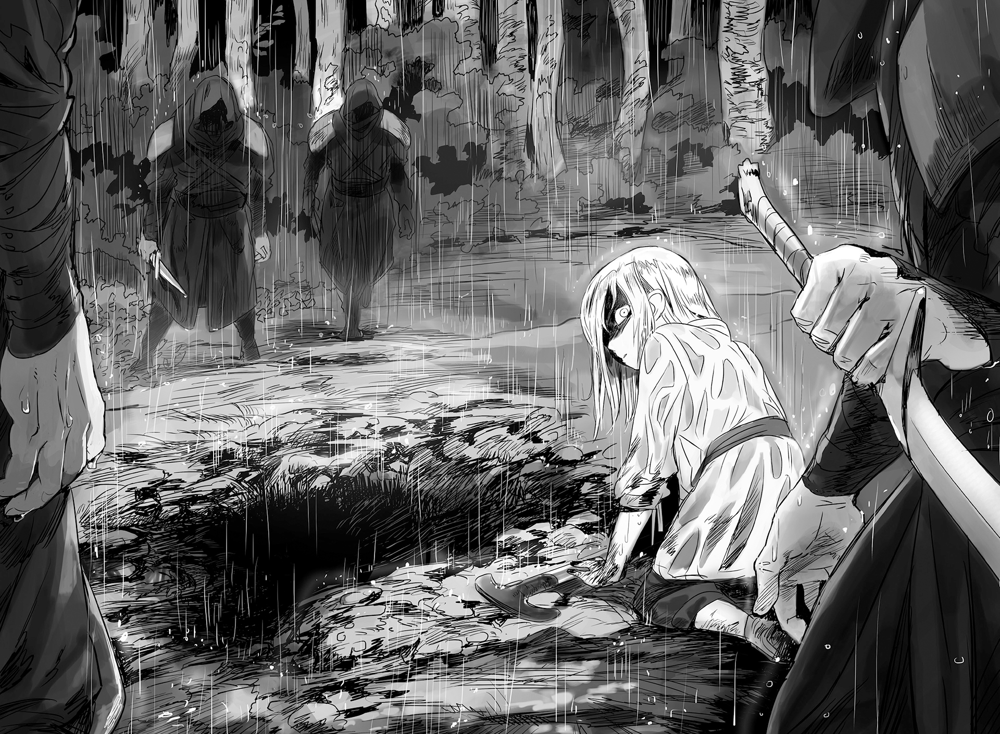
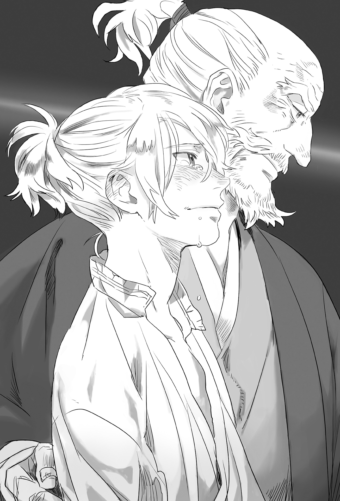

Chapter 1 – Lie And Truth
.
Part 1
The storm passed──.
The duel between son and mother that unfolded at Antrim where each side put their obstinacy on the line closed the curtain with Baldr’s victory.
Maggot sobbed like a little girl while clinging on the chest of her beloved son who freed her using sheer strength from the binding curse of loneliness of being the “strongest”.
.
It was unknown how much time passed.
Maggot who was crying for a while and Baldr wearily fainted as though they had used up their whole energy and willpower.
The superhuman battle that didn’t allow any interference from outsider put a huge burden on the two’s bodies.
The two fell asleep on the spot as though they had died. It went without saying that Seyruun nursed them after that while half crying.
When Baldr woke up after sleeping for a whole day, Seyruun hugged him tearfully while Ignis who came running after hearing the emergency dropped his fist on Baldr’s head.
「Fugyah!」
「I won’t tell you to go easy on her but……this is the punishment for the son who challenged his mother who just gave birth to a fight.」
「Yes……」
Being told that, even Baldr could do nothing but hanging his head down.
──As he thought, his mother was outrageously strong.
Baldr won with brute force by applying Over Boost over the liberated King’s Gate that was the beastman race’s secret technique, but if Maggot hadn’t just given birth, or if he was against Maggot at her heyday when she was still twenty years old, he didn’t know whether he would be able to win.
Of course Baldr was deeply emotional after surpassing his mother who had been continuously exposing him to her absurdity since his childhood. However at the same time, he also keenly experienced just how absurd his mother was once more.
From what Seyruun said, it seemed that Baldr was in worst state than Maggot, while Maggot had only ended up with some bruises.
Maggot had woken up from her unconsciousness after several hours then she breast fed the twins Nigel and Marguerite after that.
Baldr was secretly depressed when he heard that.
.
「What didja do, ya are in tatter.」
「This is the punishment of leaving us behind.」
Selina and Agatha were peeling fruits for the heavily wounded Baldr while laughing.
Seyruun and Ignis were accompanying Maggot right now.
It was clear from their expressions that they weren’t seriously angry, but it seemed they were considerably sulking after getting left behind by Baldr who was hurrying ahead to meet with Maggot.
Even the usually cool Agatha had stopped hiding her honest feeling in front of Baldr recently.
「Sorry. But it was something necessary for me……」
Maggot was a wall that one day he had to surpass no matter what one day.
And then in order to ask her about the matter of Princess Marguerite, no, in order to obtain the qualification to ask about it, he absolutely had to win.
He thought that it was really a miraculous fate.
If he directly went home to meet Maggot without going to Nordland Empire first after the victory celebration at the royal capital Cameron, Maggot surely would never admit to the truth.
Baldr would also never win against Maggot if he didn’t meet with Gina.
In the end, was it really just a coincidence that Ernst appeared and introduced himself as Selina’s fiancée?
Baldr couldn’t help but feel that there was destiny at work here.
Even so, he still hadn’t asked anything from Maggot yet.
「──How should I talk to her?」
Baldr muttered to himself.
He already heard the story from Gina. It would be strange to make Maggot talk about it again.
Even so, it would also feel stupid if he ended it with just「Is Gina’s story true?」「That’s right」.
「You finally woke up? How gutless, even though I finally reevaluated the way I look at you.」
Maggot appeared at that timing with her skin looking radiantly glossy. She was carrying Marguerite in her arms.
Perhaps it was just his imagination, but to Baldr it looked as though Maggot’s smile was kind and motherly instead of her usual sharp grin.
Seyruun who was carrying Nigel and Ignis also showed up from behind her.
「Kyah!」
Suddenly a sexy scream slipped out from Seyruun;s lips.
Nigel was looking for breast and clung on the sensitive part of Seyruun’s chest.
「W-wait! I-I-I-I still can’t produce milk……hauu! Even Baldr-sama has never touched over thereee……!」
「Nigel is really similar with his father. He is already making woman crying at this age……」
「I-I wonder what do you mean?」
Ignis broke into cold sweat and his gaze wandered around because Maggot glared fiercely toward him.
Just because she had become somewhat gentle didn’t mean that Maggot had stopped being Maggot. A punishment that was even more terrifying than death would be waiting if she was angered.
Maggot breast fed Nigel who seemed to be hungry. She really looked like a mother.
Her loving gaze and blissful smile told Baldr and the others who were watching her just how much she loved her children.
Most likely Maggot thought of family as something that had to be protected no matter what rather than something to be loved. But that unreasonable obsession had been cleared away in the battle with Baldr.
Surely Nigel wouldn’t need to experience that torturous training. Baldr unconsciously got a faraway look.
「Say, how does it feel when yer breast got sucked?」
「She was clearly feeling it.」
「T-that’s not true! I, I just, feeling strange when thinking that perhaps it will feel like this when I have children of my own with Baldr-sama……」
Seyruun hanged her head down with red face that was like a ripe apple. Selina and Agatha couldn’t help but imagining the future after she said her words.
「T-that might be nice……」
「We are going to need rehearsal before that.」
「It will be nice if I can also produce milk……」
「Can you three stop with the shaming play!」
Baldr yelled. He wondered why a talk about Maggot was affecting him instead.
‘Hmph’, Ignish snorted and threw out his chest as a senior with abundant experience.
「In the first place you can’t continue being indecisive forever. If you like them then you should at least has the passion to embrace them without thinking of the consequence……」
「Aaa? Try saying it one more time you horny frivolous man!」
Ignis’s expression changed completely after Maggot yelled at him.
「……Baldr, the most important thing for a man is earnestness.」
「That’s not persuasive at all.」
Sometimes Baldr would feel anxious thinking that perhaps somewhere in this world he had other sibling who he didn’t know about.
Actually after the war with Haurelia, Baldr was told about Ignis’s lecherous way at the old time by his father’s comrade-in-arms Mattis.
He was truly a natural fisher. When he walked at the town, he would encounter a girl in danger and gallantly rescued her, which ended up with the girl falling in love with him. That kind of even was like an everyday occurrence for Ignis.
Furthermore it was manner for Ignis to not refuse a girl’s invitation. Even so his wiles to maintain his relationships with the girls to not develop into something special were like magic.
His nickname as “Cameron’s Red Stallion” wasn’t just for show.
The number of relationships he had with women didn’t only stop at double digit, it wouldn’t be strange for the number to reach triple digit. That was what Mattis said with a wry smile.
「Keep this a secret from the madam as a man’s compassion.」
By the way the number that was found out by Maggot and Ignis was forced to break up with was around thirty percent of the total.
If he was careless, he might become the second coming of his father. So Baldr admonished and straightened himself.
Although right now he already had beautiful girls like Seyruun, Selina, and Agatha, and there were also Silk, Rachel, and Urraca falling in love with him.
As expected the son of a stallion would also be a stallion. That was the evaluation of the society. Fortunately Baldr still didn’t know about how people talked about this behind his back.
Before long Nigel got full and fretful, even so he fell asleep beside Marguerite inside the baby basket.
Maggot and the rest of the girls were watching the babies in rapture.
Innocent babies always looked like angel no matter the world.
Seyruun and others were healed by Nigel and Marguerite’s angelic sleeping faces. Their imaginations were filled with the thought of their future.
.
「──Now then」
With that short sentence, the atmosphere of Maggot who had a smile of affectionate mother changed completely. She became the Silver Light Maggot who had overcome numerous battlefields.
「Baldr already know this but, I have a secret.」
Her low and calm tone was like an unsheathed sword that was pointed toward the listeners.
Seyruun and the others unconsciously gulped from feeling that pressure.
「I intended to bring that secret until my grave. Because I absolutely couldn’t allow my family got hurt because of me. It was also because I swore to protect this family even if it cost me my life.」
That was why Maggot had to be someone strong at all cost.
She had to train Baldr to be strong.
「I have really grown old……my heart was shaken a little just because my stupid son told me 『I’ll protect everything together with you』.」
Maggot laughed in embarrassment. With that it felt like the tense atmosphere was enveloped in something soft. Seyruun and others breathed a sigh of relieve.
Ignis was wearing a conflicted smile because the one who liberated Maggot wasn’t him who should be the one who wanted to protect Maggot more than anyone else.
At the same time he was also feeling something similar with pride because the one who accomplished it was his son Baldr.
Ignis knew about Maggot’s strength and personality better than anyone. It was exactly because of that he understood just how difficult and magnificent this accomplishment was.
(You have grown into a splendid man──father is……father is happy! You should quickly let me hold a grandson next–!)
Ignis was thinking such thing. Perhaps he was someone who would quickly grow old.
「……Now that Baldr has found out, it makes me feel stupid thinking of carrying this secret to the grave. When I think that──」
Maggot said that and closed her violet eyes.
The faces of the people that floated at the back of his mind were always smiling peacefully at her.
Even though she wouldn’t be able to blame them if they looked at her resentfully, they were always smiling in her thought no matter what.
They were the figures of irreplaceable family for Maggot.
「I think that it will be lonely for them to be forgotten just like this. Because even I, don’t want to be forgotten by my adorable children who I gave birth to.」
「Okaa-sama!」
Seyruun and others were moved to tears. Seeing that, it seemed there was no need to worry about dispute between mother-in-law and daughters-in-law.
Although if things became like that, then Baldr would be completely unable to do anything to stop it.
「Kaa-sama……Lisha- kaasama ……and then Nigel-niisama……there will be no one to remember them if I die. I didn’t even notice something like that. I too was really immature.」
「Ni……gel?」
Ignis spontaneously turned his gaze toward his beloved son who was sleeping soundly when his name was suddenly mentioned.
「Yeah, Nigel’s name came from my really, really important big brother.」
Maggot said that and reminisced of the far away past.
It was when she was still childish and innocent.
She held an unconditional trust toward her family and didn’t actually know how dangerous and malicious the position she was placed at.
For Maggot, Nigel was someone who she could entrust the deepest part of her heart to.
「I loved being called Marguerite by Nigel-niisama’s kind voice.」
「Marguerite……is that your true name?」
Maggot nodded weakly at Ignis’s question.
Although she had resolved herself, something that was stretched to its limit inside her snapped by recognizing that and it felt like tears would flooded out from her eyes.
「My name is Marguerite Pazarov Trystovy. I was called the eighth princess of the fallen Trystovy Kingdom.」
「What!」
Ignis, Seyruun, and everyone were lost for words at Maggot’s completely unexpected statement.
Baldr was the only one who was staying silent without any change in his expression as someone who had known everything.
「──I want my family here to listen to my story, not anyone else. And then I want all of you to remember it in your heart, about the tale of the woman called Marguerite and her other family who aren’t here anymore.」
.
Part 2
Going back to more than thirty years ago, there was an internal trouble within Trystovy Kingdom.
In a glance it looked like the kingdom was enjoying prosperity.
Its royal capital Millianna(ミリアーナ) was full with many things that came from the whole continent. Its population continued to increase and right now it might even keep growing until it surpassed Answerer Kingdom that was the greatest nation in this continent.
Especially their powerful navy and influential merchants, the transport armada that was formed by them might be already number one in the continent.
The support of the populace toward the royal family was unshakable. It was even rumored that in ten more years this country would become the strongest country.
But, just like there was shadow where there was light, there was a force that found this development unpleasant.
A part of the nobles who were the ruling class of Trystovy Kingdom had their vested interests being usurped by influential nobles and bureaucrats with commoner background.
Any country wouldn’t be able to avoid the spreading of plutocracy as the country was getting wealthier and the economy became more developed.
And so vested rights were gradually getting traded with money in Trystovy. The nobles who lost their fortunes were ruined and before anyone realized it there were even merchants employing nobles in order to earn even more profit.
The number of nobles who were criticizing the structure of society that got overturned like that wasn’t few.
The central figure of those nobles was Duke Batista(バティスタ) Sforza.
Duke Sforza possessed the biggest territory in the kingdom. He was a grandson of the king two generations before and he was considered as a cousin of the current king.
Furthermore he offered his daughter Veltina to be the queen. His influence was extremely vast.
He was planning to have nobles controlling the economy and forbidding the trade of the vested rights in the kingdom by the merchants using the economic clout.
In respond to this, there was also a faction that was aware that the flow of the world was already leaning toward the commoners and they insisted that the nobles had to change together with it.
The person who gathered the most attention within that faction was Count Viktor Pazarov──Maggot’s grandfather.
He raised achievements as military officer when he was young. Furthermore he succeeded in improving his territory’s condition and strengthening the public order there. He was thinking that the domestic situation of the country should be reformed by allowing the wealthy commoners into the elite class.
With this faction’s backing, administrative posts for commoners were created in not few numbers and that number was also increasing every year.
Duke Sforza felt a sense of impending crisis by that trend. He made a resolute decision to remove Viktor using any means available.
.
「──What is the meaning of this?」
Viktor glared threateningly at the group of dozens of knights that was surrounding his residence.
For a veteran warrior like Viktor, dozens of knights weren’t beyond his means to defeat.
The knights seemed to be aware of that too. They kept their manner when facing Viktor.
「With all due respect, there is a suspicion of my lord count being in collusion with Answerer Kingdom. Please accompany us in order to clear this suspicion.」
「──Collusion? Are you accusing me of receiving bribery?」
Viktor who had retired from military was considered as the leader of the reformation faction, but he didn’t have any post in the government that gave him authority to do anything that other country would consider bribing him.
Viktor sensed that this was clearly a scheme by someone to frame him with false charge.
「Those curs! They don’t understand that the flow of the world can’t be changed even if they toy with this kind of crude scheme!」
「Please don’t act rashly my lord. If you draw your sword and pint it toward this kingdom, your daughter will also get implicated in this suspicion.」
Even Viktor had to restrain himself from rampaging after his daughter who was living in the inner palace got mentioned.
With this Viktor’s fate had been decided.
If this was a plot of Duke Sforza, Viktor wouldn’t become the only scapegoat. A lot of the reformation nobles would also get affected.
It wouldn’t be impossible for him to take up his weapon and revolt even if it would only end up in failure. The number of nobles and commoners who were looking up to Viktor was just that many.
However his daughter was a concubine of the king. There was also his adorable granddaughter. When their face floated in his mind, Viktor couldn’t bring himself to oppose this.
(Forgive me, Gina. I’m sorry that I can’t make the daughter who you entrusted to me happy.)
.
Part 3
「Oh, you are still living shamefully like this despite the crimes that your father committed? You are really the daughter of that shameless criminal!」
The queen, Veltina Sforza appeared with a triumphant look while bringing his hangers-on with him.
It was like a bolt out of the blue for Dahlia when she was told that her father was arrested. Her punishment was lightened by a degree because she gave birth to a princess, even so she was still banished from the inner palace. Despite that she accepted Veltina’s words calmly.
「I have nothing but gratitude for his majesty’s mercy to me……」
「Pathetic. His majesty too, there is no need to be merciful to this woman!」
That was the only thing that Veltina was dissatisfied with.
Dahlia was the woman who she wanted to kill the most in the inner palace.
Veltina had been a woman with strong jealousy from the start, but she hadn’t been blessed with children even after three years had passed since her marriage. Her flame of jealousy was burning hot toward the concubines who gave birth to a child.
Several concubines with low status had already been killed. There were also a lot of pregnant women who were killed.
Dahlia managed to give birth safely because of the king’s great affection for her. At the same time the commoners who were working in the inner palace were also giving their unspoken support toward her.
「Die! Die to protect the prestige of the king’s concubine! It’s too good for the like of you, but I shall lend you this protector sword of mine.」
Veltina said that and threw a short sword toward Dahlia.
「You will only be treated as the daughter of a criminal even if you keep living anyway. Won’t it be easier to die?」
「That’s right. You yourself also don’t want to live a poor life like a commoner do you?」
Dahlia felt like she couldn’t breathe in front of the malice from Veltina and her hangers-on.
However she couldn’t possibly die and leave behind her small daughter.
Dahlia shook her head and bowed deeply.
「I’m simply following his majesty’s will.」
「I’m telling you to die!」
Dahlia stayed firm and gave a hint about the king’s decision to allow her to live, but Veltina was simply turning furious and threw her fan.
She wanted to kill this woman no matter what.
Veltina hated Dahlia to this degree because of one reason.
Dahlia’s father Viktor was proposing so there was a marriage between Trystovy’s king and a princess of the neighboring Mauricia Kingdom in order to whittle the influence of Duke Sforza.
Veltina was a daughter of the most influential noble within the country, but if a princess from a great country like Mauricia married the king and became another queen here, her rank would be below that Mauricia princess.
Viktor had violated a taboo for Veltina. She couldn’t forgive him no matter what.
「No matter. All of you, hold that woman for me.」
Blood vein pulsed on Veltina’s forehead. She gave an order to her hangers-on.
The women were drunk in pleasure like kids who were tormenting a small animal. Their hands reached out toward Dahlia’s shoulders and hair.
Dahlia turned pale and tried to resist, but then,
「──Pardon me, my name is Ramillies, a knight who is bestowed with a guard duty by his majesty. Please tell me what is going on here.」
「U-uncouth! How dare a mere knight enter the inner palace!」
Veltina was hindered just a step away from the fulfillment of her wish. Her beautiful face distorted like a horned demoness and she screamed.
「It’s a royal order from the king. From now on this humble knight shall accompany Dahlia-sama to live in a detached palace and act as her guard.」
Ramillies unfolded a royal script that had the king’s seal stamped on it.
Ruin would be waiting for those who opposed this royal edict, at least on the surface. Even Veltina wasn’t an exception.
She bit her lips so hard that blood trickled out. Veltina clenched her shaking fist before she finally calmed down herself.
「──Don’t forget. I don’t have any intention of choosing my method in order to grant my wish.」
She would definitely kill her.
She would send both mother and daughter to hell with the brand of loser stamped on them. She would watch that happened joyfully while drinking a high-grade alcohol──Veltina swore that in her heart.
「Let’s go. The air of the lowly mongrels will only dirty us if we are staying here.」
Veltina disappeared from view with her hangers-on trailing behind her. It was then Dahlia staggered on her feet. She almost fell on the floor face first if not for Ramillies who barely supported her with his right hand.
「It looks like I’m not late.」
「Ramillies, thank you for coming here. Even so, I’m amazed that his majesty is sending you here.」
「With all due respect, this is a deal that was made so that Viktor-sama won’t let his blood rush to his head. If Dahlia-sama’s safety isn’t guaranteed, it’s possible that Viktor-sama might cause a revolt.」
「I see……so Otou-sama is……」
She couldn’t tell her father to rampage as he pleased without minding about her.
It was because Dahlia had a beloved daughter who she had to protect no matter what.
「His majesty is also aware of this. From now on I shall protect Dahlia-sama’s life with my life at stake.」
「If it’s you then you should be able to obtain promotion as a royal guard to a very high position……even so this kind favor of yours toward this helpless self is truly something irreplaceable. I’m grateful to you.」
「Compared to my debt to Viktor-sama after he saved my life, something of this degree isn’t anything big at all.」
Ramillies declared that without the slightest hesitation.
For this man of integrity, the man called Viktor was someone worthy of his loyalty.
When he was still a trainee knight, he got carelessly isolated in a conflict against Nedras Kingdom. It was Viktor who saved him from that tight spot without even caring of the danger to himself.
After that he also caused a problem with a son of a great noble. It was also Viktor who helped him out just when he was about to be punished. It was also Viktor who recommended Ramillies to be a royal guard that was a glorious post for a knight.
Originally Ramillies wanted to serve Viktor himself, but Viktor felt that Ramillies’s talent would be wasted on him and pushed him into an elite course for a knight.
Since then Ramillies raised achievements smoothly and many people put their expectations on him that he might even become the royal guard commander in the future.
However such thing worth less than a dust for Ramillies.
If only he wasn’t entrusted with safeguarding Dahlia and others, he would have cut his way into the prison where Viktor was imprisoned around this time.
He swore that he would protect Dahlia and others in Viktor’s place without fail.
That was Ramillies’s oath as a knight and as a man.
.
「Oh? Sir Ramillies, why are you here?」
「Aaa! Beardy uncle! You’re coming to play?」
A lively girl with silver hair and sparkly violet eyes appeared with a maid leading her here. She called out with a bright voice.
「Ha ha! I told you to just call me Onii-chan, Marguerite missy.」
「Because, Nigel-oniisama said that beard is something that adult man grow out.」
「That’s certainly true but, that boundary is a delicate and important matter for a man.」
「Marguerite doesn’t get difficult thing like that.」
Although she said that, Marguerite pestered Ramillies so he would give her a lift.
Her daughter wasn’t understanding their situation at all. Dahlia finally realized that she was shedding tears in front of her daughter’s loveliness.
「Mama, what’s wrong? Are you hurt?」
「I think so. Mama’s heart is a bit painful. That’s why, is it okay if mama cry for a bit more?」
──In the first place Dahlia became the king’s concubine not because she wished for it.
She was Viktor’s only daughter. She was raised believing that one day a husband would marry her to take over the headship of Pazarov House.
But the king fell in love with her at first sight by chance. Five years ago she left the house where she had been living in until then and entered the inner palace thinking that doing this would help her father.
However with the incident this time, even the promise that her daughter would be allowed to succeed Pazarov House when she grew up had become completely pointless.
What would happen to little Marguerite after this?
Just like how her father was gambling his life in order to secure safety for Dahlia and others, the determination to throw her own life away in order to save Marguerite was also starting to bud inside Dhalia.
From how she acted, the possibility of Veltina having a change of heart was extremely low.
Even if it was alright right now, it was unknown how it would be two or three years later, or perhaps even earlier than that. Dahlia didn’t have the confidence to protect her daughter for that long.
She would even become a demon if it was for the sake of saving Marguerite.
It didn’t matter what she needed to sacrifice for that, even if she dirtied her hands with numerous wrongdoings that would drop her into hell after she died.
That was why she wanted to cry just for now.
Because she wouldn’t hold any resentment no matter what was done to her when the time for her judgment came one day.
「Mama, where is the heart located? Marguerite will pat it so that it won’t hurt anymore.」
「You’re really a good girl Marguerite. But mama is fine already. Mama is strong you see.」
Dahlia lifted her head and said that. Her eyes had stopped crying, in exchange flame of dark madness that was difficult to dispel flickered within them.
──And then, her father Viktor Pazarov was executed.
.
Part 4
「So this is the detached palace.」
It was a small house located around 700 meters from the inner palace.
It was a detached palace in name only. The place was too crude for a king’s concubine to live in.
However Dahlia felt that it would be easier to live here compared to the inner palace where there was almost nothing but enemy at the surrounding.
「Looks like this will be a good chance to show off my skill to clean up this place!」
Dahlia’s maid, Lisha puffed out her chest while breathing roughly.
She had been serving Dahlia all this time ever since she was still living in Pazarov House. She was like a little sister for Dahlia.
She had blonde hair with color that looked like bright honey, round eyes that looked friendly, and innocent experience. She allowed Dahlia to forget about the graveness of their situation.
「Hey! Mama! There is an attic inside! Can I go there?」
A young boy cling on Lisha’s skirt with a face shining bright from curiosity. Marguerite also showed her agreement with him.
「Nigel-niisama! Me too! Me too!」
The young boy’s hair color was blonde like her mother, but even though he was a child, the features of her face gave off a sharp elegance. He looked more similar to Dahlia rather than Lisha.
It wasn’t anything strange. These two would never say it by themselves, but actually Dahlia and Lisha were sisters from different mother.
If Dahlia’s mother Gina learned this, it was unknown what would happen to Viktor’s life. But, Viktor only laid his hand on the now departed mother of Lisha after he parted from Gina, so he wasn’t guilty in this matter.
Originally Dahlia and Lisha should be raised as sisters.
However Lisha’s mother knew about the ardent love between Gina and Viktor. She feared her child getting into a dispute of inheritance rights with Dahlia.
Dahlia’s position was very unstable because Gina was gone. It was possible that the retainers might be pushing for Lisha inheriting the house, but Lisha’s mother obstinately refused such thing and she denied having any relationship with Viktor.
And then she taught her daughter Lisha to serve Pazarov House and Dahlia with everything she had.
Because of that the two of them had been getting along with each other like best friends since their childhood, but Lisha never forgot her loyalty to Dahlia as a maid.
「Nigel, be careful so that Lady Marguerite won’t get hurt up there okay?」
「Yep, I understand.」
「It’ll be fine! I’m more worried that it will be Nigel-sama who get hurt rather than myself!」
Nigel smiled wryly at Marguerite’s frank words.
It was something shameful for a man, but it was true that Nigel’s physical ability was far below Marguerite even though he was seven years old while Marguerite was five years old.
To be honest, Nigel even though that Marguerite was too strong.
Even his mother Lisha wasn’t a match for Marguerite if it came to a head-on contest of strength.
「Hey! Let’s go quickly!」
Marguerite pulled at Nigel’s right hand. He stopped thinking and ran toward the attic together with her.

「It might be good for those children that we left the inner palace.」
That inner palace couldn’t be called as a good environment for energetic children to play around even as a flattery. It wouldn’t be strange for them to die an accidental death any time if they let down their guard down even slightly.
Dahlia didn’t have any power anymore now after her father Viktor was executed.
It was impossible for her to return to the inner palace at this point. She had no attachment to this world after her husband abandoned her.
She had no attachment except one, the future of her daughter Marguerite.
Would that Veltina feel satisfied with just her life? The answer was no.
Putting aside Dahlia, Marguerite was a fully-fledged royalty.
She was like an insignificant surplus with her title as the eighth princess, but all her siblings had already died.
There was widespread rumor that this too was the work of Veltina behind the scene.
Besides Veltina also still didn’t have any child of her own.
For her, all the concubines who were blessed with child were target of her jealousy. Her way of thinking was that it would be better if her child who would be born someday had as few rival as possible.
In other words the possibility of her overlooking Marguerite was extremely low.
What could someone powerless like her do for Marguerite’s sake?
Dahlia silently smiled while feeling anguished inside her mind that was on the verge of insanity.
Fortunately as long as Veltina was in the palace, there wouldn’t be anyone who proposed marriage talks for Marguerite.
Ramillies would protect them while they were living here.
No, would it really be like that?
How long an overly energetic girl like Marguerite could contend herself being cooped up in this residence?
Wouldn’t she sneak out from under their watch and run away to the outside world, and ended up as a cold corpse after the enemy found her out?
Dahlia felt cold as though her body was freezing just from imagining that.
She had to think.
In order to protect her daughter, she couldn’t be picky with her method──.
Dahlia who should be a delicate and gentle woman was captured in her wild delusion. She was transforming into a different existence even though there wasn’t any change in her appearance.
──She could hear the joyful laughter of children from above.
Marguerite was really attached to Nigel. Dahlia recalled the memory of her happy childhood just for a little bit.
She never thought that this kind of future would come when she was playing house with Lisha in Pazarov House.
「When I look at those two, I can’t see which one of them is a girl.」
「It makes me worried for the future of my son.」
Those who saw Nigel’s crisp good looks predicted that he would become an extraordinarily good looking man in the future.
Marguerite also inherited the beauty of her mother, but even she had to admit that Nigel was a step above her in that respect.
If Nigel grew his hair and Marguerite cut her hair, there would be few people who could correctly guess their gender if there was any.
It was here that a devil’s temptation whispered into Dahlia’s head.
It was truly a devil’s deed. If Dahlia still had her sense, she would never even contemplate such absurd plan.
However Dahlia wasn’t the young lady of Pazarov House anymore. She had fallen to be a monster in the form of mother.
Dahlia spoke with a cold-hearted voice that she never used toward her half-sister who had accompanied her life since she was born.
「Lisha, can you please listen to a request of mine?」
.
The attic was still covered with a thin layer of dust, but there was no way children would be bothered by such thing.
Marguerite and Nigel tumbled into the room while messing around with each other.
The ceiling inside was so low that even children could just barely stand up in there.
The light of the setting sun was shining in from the roof window. The children’s hearts felt something mystical from that.
「This is amazing, Nigel-niisama!」
「Yep, now I want to stare at the star at night from here.」
「You’re right! I want to do that!」
Marguerite hugged Nigel from behind happily.
There wasn’t any maid who gave them cold gaze or annoying auntie here like in the inner palace.
It was fine no matter how much she fawned Nigel here. That feeling of liberation was making Marguerite’s tension rising.
Nigel who was two years older than her was astonishingly pretty. He had a nice smell when she hugged him like this.
Marguerite knew that Nigel was always kind and considerate to her.
Her heart felt cheerful just from staying at his side.
Her cheeks naturally loosened when she thought that these fun days would continue forever from here on.
「Look, your clothes got dirty.」
Nigel dusted off her clothes that got covered with dust. Marguerite smiled bashfully.
「Ehehehehe……」
This time Marguerite hugged Nigel from the front.
「Marguerite is more spoiled than usual today.」
Nigel spoke in exasperation, but Marguerite knew the truth.
Nigel’s hand was gently caressing her hair. He didn’t dislike what she was doing no matter what he said.
.
Part 5
Ramillies was sleeping in front of Dahlia and Marguerite’s room. His hands were still holding on his sword.
It was late at night.
There was no sound in this silent night except the sound of trees rustling and insects chirping. There the door at the entrance opened slowly without any sound.
At the same time men dressed in black entered inside one by one without making any sound.
Their number was six.
「Hmph, I heard he is the number one swordsman in the kingdom, but this is all he amounted to.」
A man dressed in black laughed soundlessly.
For this man who lived in the world of darkness, Ramillies who obtained fame as a knight under the light of the day was a target of scorn and also envy at the same time.
In the end a knight was nothing more than a muscle-brain who could only fight head on.
They could be killed anytime if a resident of darkness like him felt like it.
A knight was no different from a baby for them.
Ramillies showed no sign of waking up at all. The men approached him with satisfied self-esteem.
It was then.
Ramillies who shouldn’t wake up because of the effect of sleeping aroma they carried with them opened his eyes.
「──Rookies.」
The man spontaneously trembled in rage by the words of someone strong looking down on someone weaker.
Even so the man just barely swallowed his words due to the instinct engraved into his body to prioritize his duty.
And then he silently raised his short sword to sever Ramillies’s life.
Ramillies was still sitting while holding his sword in his arms.
There was no way he could evade this.
The man’s lips twisted in pleasure because he was convinced of his victory.
This man was talking big, but he couldn’t do anything anyway.
In addition he wasn’t alone. A human with only two arms couldn’t possibly dodge all the attacks from his four comrades.
「──Too slow. You guys are inferior even to the average knight in the knight order if this is your best.」
「What……?」
Short swords were swung toward Ramillies’s neck from left and right. In addition there were also simultaneous attacks from the front and above.
Ramillies shouldn’t be able to do anything while he was still sitting like that.
And yet…….
Ramillies snorted with a nonchalant expression while holding his sword in one hand.
He deflected all four attacks with a quickness that made it looked like it all happened at the same time.
The men accurately realized the gap between their strength with just that.
No, they were forced to realize it whether they wanted it or not.
Because it wasn’t just their short swords that were repelled, even their wrist had been severed.
Even so they didn’t even let out a scream. Their tenacity at least deserved a praise.
The vanguards who lost their ability to fight exchanged glances. Then they leaped toward Ramillies once more.
They hardened their resolve to use their body and life as sacrificial pawn in an instant.
Two men were readying their long sword behind the four. They closed the distance to pierce Ramillies together with their comrades.
The four would die in an instant.
Their torso might be severed into two. Or perhaps their head would be split open.
However there was no doubt that their body would serve as hindrance to Ramillies’s movement.
「Die!」
One of the men let a word slipped out from his mouth. It seemed he flew into rage by his comrades’ death.
However not a single one of their expectations came true.
「Foolish.」
From Ramillies’s perspective, he was simply being underestimated if they thought that the bodies of mere four assassins could serve to restrain his movement.
Ramillies had faced knights in full armor and war horses at the battlefield.
On the other hand the assassins were just killers who murdered the weak with surprise attack in the end.
They didn’t understand at all just how absurd a man who had fought at the frontline could be.
They shouldn’t try to stab Ramillies together with their comrades’ bodies.
With a simple light swing from Ramillies’s sword, the dead bodies of their comrades got blasted away instead. The two assassins with long sword who tried to stab Ramillies were blown away until outside the entrance door.
「Don’t disturb Dahlia-sama and Ojou-sama ’s sleep. If you want to defeat me, bring a company of knight squad with you.」
The assassins were writhing in pain under their comrades’ corpses without understanding what just happened. They realized with despairing clarity that Ramillies hadn’t even displayed half of his true strength.
Till the end he was paying meticulous attention to not make any sound so that his master wouldn’t wake up from her sleep.
「It’ll be bothersome if you guys dirtied the garden too. Trash should die like the trash they are.」
And then with an outrageous physical strength that was like a bear, the assassins’ bodies were thrown away over the tall rampart and even the moat to the roadside.
At the next morning, the corpses were discovered. Because the bodies were in a terribly atrocious state, rumor that there was an apparition in the capital was spreading, but the assassins’ corpses then vanished without anyone knowing about it.
.
Part 6
Around half a year passed since then.
「YAAAAAAAH!」
A girl with her blonde hair cut short let out a slash with an eye-popping speed.
However it was only relatively surprising for a five years old. It was nothing but a child’s play for veteran warrior like Ramillies.
「You are still lacking strength! Don’t swing your arm! Imagine your whole body turning into a single sword!」
The girl’s eyes moistened in frustration because her sword was easily deflected.
The girl couldn’t accept defeat even though she was inferior in everything compared to her opponent whether it was in age, physique, and also experience.
The girl used her frustration as fuel to charge once more.
「YAAAAAAAAAAAAAAAH!」
「Umu, it’s quite good this time!」
Ramillies smiled broadly after feeling the attack this time that was backed with the heaviness of the girl’s body weight.
The girl’s body weight was around 20 kilograms.
Her height was around 110 centimeters. She was taller than average, but it was her physical ability that was more surprising than anything.
There was no way anyone in the same age with her could win against her.
It was doubtful that even twelve years old boy who became a knight apprentice could win against her.
The girl became stronger in a visible rate like a sponge that was sucking water. Ramillies’s heart was beating hard in his chest.
It was a joy that he hadn’t felt for a long time since his lord Viktor was executed.
「But it’s still too inadequate! Your foot stamped on the ground too weakly, so the impact wasn’t fully transmitted!」
「UKKYAAAAAAH!?」
The girl was blown away like a ball. She rolled over on the ground.
「Damn it! Did I hit too strongly!?」
Ramillies held up the girl’s body in panic.
「A-are you alright? Marguerite missy!」
Ramillies unconsciously called the girl that because of his habit. The girl pinched his nose with a displeased expression.
「I’m 『Nigel』. I told you that already.」
Ramillies finally realized what he had just whispered and scratched his head awkwardly.
「Sorry. Let me rephrase that. Are you alright, Ni?」
「Well, I’m not even scratched from just this much!」
The girl smiled. She was really a sturdy kid.
She was carefree to the utmost. She was also persistent and tenacious. She would surely become strong. Ramillies believed that without a doubt.
「Then let’s have one more bout!」
「I’ll land a hit today for sure!」
The girl laughed animatedly. She continued challenging Ramillies until she became unable to stand anymore.
.
The morning training ended. It made the girl sweaty and dusty all over her body. She rushed toward the house with empty stomach. However, Lisha immediately dragged her out.
「Eeh? What? What’s the matter Lisha-kaasama!」
「Are you going to show yourself in front of the madam looking like that? Wash your body in the bathroom right away!」
「The water hasn’t been boiled right?」
「Obviously! Go already!」
「Ye~~~~s!」
The girl imagined the water that had turned cold in the bathroom while heading toward the bathroom grudgingly.
Lisha sighed seeing the girl’s skin that had become tanned from sunlight.
The girl had become like an uncouth child even until her appearance. Lisha couldn’t hide the bewilderment in her heart after seeing such degree of change.
No, the girl already had the potential to turn out like this from the start.
Thinking back, the girl’s grandfather, Viktor was also a completely unruly child at his childhood.
Even so, she wondered if it was alright for a princess of a kingdom to become completely uncouth like this.
The girl was turning manlier day by day. It made Lisha felt a tinge of uneasiness.
「Well, it’s fine that she is like this for now.」
Yes, the matter of future could be considered again at the later time.
Right now they should focus more on surviving in this completely unforgiving world.
.
「Yo, you’re completely pitch black, Ni.」
「Mar-oneesama, you’re pretty!」
The girl returned to the living room after she finished taking a bath. A girl with shiny silver hair welcomed her there.
──Strictly speaking, it was actually an extremely beautiful boy dressed in girl’s attire. In contrast with the girl whose hair was roughly cut short, the boy was wearing a wig of beautiful silver hair that reached until his waist.
The boy’s bearing was filled with graceful elegance. It was hard to believe that he was still seven years old with his appearance. The girl blushed ecstatically seeing the boy.
「As I thought, Mar-oneesama is really a princess!」
The boy who was called with the nickname Mar──Nigel tilted his head in embarrassment and smiled at Marguerite.
The two’s positions had been reversed after they came to this mansion.
.
『Actually my true child is Nigel. I might get killed if they found out that a concubine like me gave birth to a boy, so I asked Lisha to swap baby with me.』
.
Dahlia gave such explanation to Marguerite not long after they arrived in this mansion.
The first queen Veltina didn’t have any legitimate child. Although Dahlia was a concubine, she came from a count house. It would be too dangerous if she gave birth to a boy.
She might be assassinated or poisoned. Either way it was clear that Veltina would kill her at all costs.
Actually there were already two boys who were born in the royal family until now. But both of them didn’t even manage to live for one month.
Dahlia devised a plan to exchange child with Lisha who by chance gave birth to a girl──in other words, Dahlia’s true child was Nigel while Marguerite was Lisha’s child. Such lie was told to Marguerite.
If one thought carefully, they would be able to spot a lot of holes in this story.
If Nigel was the one who should be protected, it wouldn’t be logical for him to disguise himself as the princess whose life was being targeted. Nigel was also older than Marguerite. The timeline already didn’t match from there.
But Marguerite’s physical ability was far more developed than Nigel, so the lie that Marguerite was actually older was quite convincing.
And above all else, these were the words from her two beloved mothers──Dahlia and LIsha, so Marguerite believed the lie easily.
「Ni. Mar has to dress like a girl so that no one will notice that he is a prince.」
Dahlia kindly patted her daughter’s hair.
「But Ramillies will protect us so there is no need to worry. Keep getting along well with him too from here on, okay?」
「Yep! Then, I also will protect Mar-oneesama!」
Marguerite accepted her position without any objection. That was because from the start she had been thinking that Nigel was prettier than her.
.
Marguerite was smiling cheerfully in a good mood.
She was just having too much fun staring at Nigel who was dressing himself up beautifully.
「Ni, come here for a bit.」
「What’s up?」
「You’re injured here. You’re still a girl Ni, no matter how strong you are.」
Nigel dipped Marguerite’s right hand in water and wiped it with handkerchief worriedly.
Nigel found small marks of bruise on Marguerite’s skin that had fine texture that was sucking in his skin. Although the bruises weren’t so serious to be called injury, they could be found all over her body.
Ramillies had held back skillfully in the sparring, but Marguerite was getting better faster than he expected.
Ramillies was thinking that at this rate, he would be forced to get somewhat serious in the sparring sooner or later.
Of course it would only be to the degree of paying attention when the opponent was just a child. However at any rate, it shouldn’t be that long before Marguerite had mastered martial arts enough to be able to face adult opponent.
Ramillies had been wondering if this martial arts talent was really natural.
Viktor was a prominent fighter even throughout Trystovy, but Ramillies didn’t think that Viktor’s talent as individual fighter was as great as Marguerite.
Stamina, reflex, instinct. Marguerite possessed all of them in higher level as though she was in a different dimension. If times were better, it might even be possible for her to make a name of herself as the world’s strongest warrior.
Ramillies regretted that Marguerite’s talent would be wasted because that dream couldn’t come true due to her background.
Even so, strength was needed more than anything in order to survive.
Furthermore it had to be an overwhelming strength that could push aside the impossible.
To do that, even the slightest pampering wasn’t allowed. Ramillies decided so in his heart.
Of course, there was no way Nigel understood that kind of hidden circumstances.
He was simply worrying about his beloved little sister who he was serving as his master.
Marguerite got into a good mood because her beloved big brother was taking care of her. Her eyes squinted fondly while she allowed Nigel to continue what he was doing.
「I’ll become stronger to protect Mar-oneesama!」
Marguerite seriously believed that.
She innocently believed that her role as Lisha’s daughter was to protect an ideal princess like Nigel.
「Yes……thank you.」
However Nigel knew.
Marguerite was the only one in this confined world who didn’t know the truth.
It was Marguerite who should be protected.
I am the last fortress that is protecting you.
Nigel had certainly inherited the blood of the family that had offered their complete loyalty and devotion to Pazarov House since the generation of his grandmother.
Since he became aware of his surrounding, his mother Lisha had imprinted into him that 「Your body exist for the sake of Pazarov House」.
Even though he was still seven years old, no, perhaps it was exactly because he was seven years old that Nigel didn’t feel any doubt at all toward his position.
Because of that, even if it cost him his life──.
「Oh, Nigel, are you injured?」
「This is just a scratch! Madam!」
Even though she was the one who made the lie, Dahlia felt ashamed in her heart to hear her actual daughter calling her madam.
Even so she didn’t show her feeling at the slightest on her face. Dahlia gently caressed Marguerite’s head.
「I see, Nigel is really a strong child.」
At the same time Dahlia knew that strength was a double-edged sword.
Because this talent was without a doubt something that Marguerite inherited from her grandmother Gina who was a peerless warrior.
Trystovy was a country with many traditions. It would be a great scandal if it became known that beastman blood was mixed into the royal family.
Originally Marguerite shouldn’t be allowed to learn how to fight like this.
However that extraordinary talent in martial arts became absolutely necessary in order for Marguerite to survive as the maid’s son Nigel.
Veltina’s target was still Dahlia and her daughter, but there was no guarantee she wouldn’t direct her ire toward Lisha and her son as harassment.
Besides if they lost Dahlia’s patronage, Lisha and Nigel would be banished from the palace and became jobless.
There wouldn’t be any disadvantage in having as many powers as possible in order to protect themselves.
In fact if Marguerite could survive until she became adult, she would become capable enough to protect herself even if her opponent was a country.
She had inherited Gina’s blood thickly, so Dahlia didn’t doubt that at all.
「Forgive me then, but can I ask Nigel to leave. Marguerite have a lesson to do after this.」
「……Understood.」
Marguerite became visibly dejected. Nigel smiled kindly at her.
「I’ll read a picture book for you later, so wait for me.」
「Thank you! Mar-oneesama!」
「Then come with me Marguerite. Today’s lesson is about manner.」
Fortunately Dahlia and others were living quietly without anyone watching them.
If they didn’t show themselves for one or two years, there should be no one who could imagine how the children had grown up.
In addition Nigel’s beauty was something that clearly would draw interest. If he was made to wear silver hair, other people would just think that the princess had grown to be very beautiful while outside of public’s eye.
Additionally, it was essential to teach Nigel manners and educations that were worthy for a princess in order to strongly impress others that he was Princess Marguerite.
Luckily or unluckily, Nigel wasn’t lacking in strength of will, talent, or looks to endure the situation and pull that off.
.
Part 7
A silhouette was approaching Ramillies who was standing straight while guarding the residence.
Although Ramillies had confirmed that the approaching silhouette was a man who he knew well, Ramillies didn’t change his straight posture that was like a rock.
「Working hard aren’t you.」
「What’s your business?」
Ramillies’s words were curt even though he had half-guessed what this man’s objective was.
This man was a comrade-in-arms and also a best friend of Ramillies, but duty came before feeling.
「Won’t you stop already? Quit from a gatekeeper job like this.」
「I don’t think there is anyone else who can do this job other than me though.」
Dahlia was a daughter of a criminal. She had lost the king’s favor. Furthermore the queen was aiming for her life. It was the absolute truth that there was nobody else but Ramillies who could protect her.
If Dahlia was simply protected by some soldiers who were dispatched from the palace, she and her daughter would have been killed already since a long time ago.
「His majesty say that he will welcome you to be the royal guard’s commander once more if you simply agree to it. I can’t bear watching a man of your talent to be rotting at this kind of place.」
「That’s really not like you, Olten(オルテン). A man rots only when they twist their principle.」
Ramillies didn’t waver even when it was his best friend’s words.
He had understood Olten’s way of thinking since the beginning. Because Olten was a friend that he was proud to have. Olten acknowledged Ramillies’s strength more than anyone and Ramillies also trust him to guard his back in the battlefield.
「Trystovy needs you! Answerer Kingdom is eyeing our country, and the antagonism between the nobles and commoners are also continuing to escalate. The day where you will be needed in the battlefield will surely come!」
Most of all Olten thought that he wasn’t Ramillies’s match when it came to controlling soldiers as a commander.
His best friend had a talent that was even more dazzling than jewel. Olten couldn’t allow him to content himself with playing bodyguard in this kind of place.
「──What are you asking me to fight for? Is it for promotion? Is it to allow some nobles to do as they please?」
「T-that’s……for the sake……of the country」
Ramillies’s words were scathing, but his expression was gentle.
「Forgive me my friend. I have a thought of my own. A country that pinned a crime on someone innocent like Viktor-sama who had shed his blood for the sake of this country, isn’t worthy for my loyalty and sword.」
Olten’s feeling toward this country was genuine.
However the current Ramillies was simply unable to innocently believe in his homeland like in the past when he was still a knight.
Olten saw a despair so deep it didn’t allow him to even cry inside Ramillies’s smile.
──He couldn’t change the resolve of this man.
He repeatedly told himself that it would be a waste for Ramillies to stay here, but as his best friend, he shouldn’t make Ramillies went against his principle here.
「At least don’t die. This is my request as your friend.」
There was no barrier that would protect Dahlia and others if Ramillies died.
Ramillies laughed with a quiet confidence.
「Have you forgotten the knight’s oath? We aren’t allowed to lose because we are burdened with people who we should protect on our back.」
Those words were spoken when he was appointed as a knight for the first time. Ramillies had never forgotten it even for a moment.
「Exactly. It’s exactly as you said but……how regretful.」
A man who embodied the ideal knight to this degree was put into a mortal danger in obscurity just because of a selfish woman’s wickedness.
Olten’s lips twisted in loneliness when he was faced with such miserable reality.
.
Part 8
And then two more years passed.
Tonight too there were another assassins lurking in the darkness. They stepped into the detached palace where Dahlia and others were sleeping.
Although, the guard Ramillies had become famous as assassin killer, so only ignorant thugs or foreign assassins would visit here lately.
「He he……the king’s favored concubine huh. I want to enjoy her first before we kill her.」
「Quiet. If we get found out then even that person won’t cover up for us.」
「Yeah yeah……tough life.」
The man shrugged with a sigh.
Although it was in the past, there was no way a concubine who once received the king’s affection wasn’t beautiful. If they were going to kill her anyway, they should get their appropriate due first.
Although, it was a different story whether that was worth the risk or not.
「Even so this residence, the security is too light. Didn’t they say that the king’s daughter is living here?」
「The girl has the blood of criminal flowing inside her, so no one want to get involved with them.」
「Heh! They should just kill her together with that traitor to save the trouble.」
「We can get a nice paycheck thanks to that though.」
「You ain’t wrong.」
They heard that there were only women and children and at best just a single guard. So they entered into the residence’s garden carelessly without any vigilance.
Although usually the most difficult part in this kind of mission was to slip inside the castle where the royalty was living at.
They got through that most difficult obstacle thanks to their client’s guidance. Because of that they thought that this mission was already as good as done.
Of course that was nothing more than their hubris.
「Hm? Is the moon covered by cloud……everyone, pay attention to where you step.」
The moon had been illuminating the ground beneath them brightly until just a moment ago, but it had been suddenly hidden by a thick dark cloud.
The number of nightlight that was placed inside the castle wasn’t that many.
Much less the detached palace that was ignored by everyone. This place was genuinely dark.
Although the men were used to seeing inside darkness, they were perplexed by their dim vision where they could only see blurry silhouette. It was then──.
「──Die. There is no mercy for the trashes who are targeting the madam and Mar-oneesama.」
.
Of course, the mastermind also wasn’t so foolish that they thought the foolish thugs could accomplish the assassination.
No matter what people said, the one who protected the detached palace for more than two years had done his duty without letting even a single one of the residents died until now.
There were even real knights wearing disguise among the assassins who were sent here.
And yet Ramillies kept sending all of them from this world to the distant nirvana like an unwavering rock.
Ramillies wouldn’t even break a sweat against the average opponent.
If his best friend Olten received the order to carry out this mission, he would declare that they needed a squad of knights from regular army and a commander with martial prowess at the level of knight commander to accomplish it.
That was just how great a threat the martial prowess and calm judgment of the man named Ramillies.
The mastermind understood that the town’s thugs wouldn’t be able to do anything against Ramillies.
.
「Hou……it has been a long time since a professional assassin visit here.」
An assassin sneaked into the residence smoothly with the sound of sword fighting at the garden as his signal, but he jerked in surprise because someone unexpectedly talked to him.
It was only natural that the man was surprised.
They had sent attackers that consisted of only thugs for five or six times for the preparation of this day.
Ramillies should be letting his guard down around this time, or at the very least he should be assuming that it was an attack by thugs.
「I wouldn’t be able to serve as knight commander if I can’t see through diversion of this level.」
「Is it fine for you to be here? Even those thugs will be enough to kill the madam and the other people inside.」
The assassin intentionally laughed as provocation.
He understood that this wasn’t an opponent that he could win by fighting head-on.
Too bad however, Ramillies only had a single body. He couldn’t possibly face those thugs and the assassin in front of him at the same time.
If the assassin didn’t fight Ramillies head-on and focused on defense, then it would be possible to at least buy some time. The assassin silently believed so.
No, if Ramillies got impatient and his movement turned dull, then perhaps he could even defeat──.
「Don’t worry. They will all die without exception.」
「How? Do you plan to leave me to take care of them? I don’t mind if you do that.」
The assassin laughed boldly. But Ramillies simply smiled pityingly at him.
「──What’s so funny?」
Something was amiss.
Was something different from his assumption going on here?
It was while the man was pondering such possibilities in confusion that it happened.
「Kahyuh!」
The man heard a familiar and unique dying scream that could only be heard when the carotid artery in the throat was cut.
.
A black and small silhouette leaped out from behind the thugs.
The silhouette’s movement was wild but refined. It reminded one of a wolf when hunting.
A man fell like a decayed tree without being unable to do a thing. Finally the men noticed the fact that they were under attack.
「S-shit! Is it the guard?」
「W-we got ten people here! Surround him and beat him up!」
The thugs moved about in confusion to take revenge for their comrade, but two men silently fell once more before they could find the attacker. This time the cause was thrown knives that deeply stabbed into their spinal cord.
The thugs felt terror because three of their comrades were killed without being able to do anything to fight back.
Even though they couldn’t feel any repulsion about killing, they were sensitive to danger that could kill them.
「Hiiiih! Where? You coward, show yourself!」
「Crap……crap. We should run away quick……!」
「Stupid moron! Our lives will be gone if we run away without any result!」
The men were aware that their client was someone with really high position in the palace.
Of course, they weren’t aware at the slightest that the mastermind was Veltina, but they were able to easily imagine that they wouldn’t get away unharmed if they failed this request.
「The opponent is just one person! If we can just injure him a little……!」
It could be the arm or the leg or anywhere.
The man judged using their experience that even just a bit of injury would be enough to take away someone’s fighting strength.
However in the end that was a logic that could only be applied when they were trampling weakling at a street corner somewhere.
「……Don’t think that you guys can get away just because you are merely bait.」
「Don’t tell me……this brat is-?」
The men finally saw the figure of their attacker.
It was a cute girl with blonde hair that looked vibrant even in this darkness.
She was still six or seven years old with a small body. The short sword that was dripping with blood looked really out of place in her hand. The men’s eyes opened wide like saucer.
「T-this brat……how dare you!」
The men’s meager pride seemed to be stimulated by this. They recovered from their panic and moved to surround the girl.
However they immediately noticed that another of their comrade had become a mute corpse.
They didn’t even notice that a fourth victim had been killed. They hesitated whether they should continue fighting or run away without caring of any shame.
The girl wasn’t someone who would quietly overlook that opening.
「──The madam and Mar-oneesama and Lisha-kaasama are behind me.」
The girl leaped at the center of the bewildered men and her sword drove into the heart of the man that she passed by.
「Guhah!」
──Fifth.
The limit of their pride and fortitude was reached there.
Nearly half of their comrades were killed without being able to fight back. Even if they continued fighting like this, it was highly likely that the remaining half would just get killed easily.
「D-dammit! This isn’t like what I heard! This should be an easy job!」
「Even though it should be just killing woman and kid……!」
The girl’s violet eyes were filled with the color of dark rage hearing the men’s careless words.
「……You all absolutely won’t get away.」
「Shit! You brat! What the hell is this monster!」
A man turned his back to abandon his comrades and run away, but a knife hit his neck and he expired.
They couldn’t even show their back carelessly.
The terror of death that they felt so close to them for the first time made the men’s expression convulsed and they begged for their life tearfully.
「W-we are in the wrong! Forgive us! We won’t do anything like this again!」
「We’ll do anything! We’ll do anything so at least spare our life!」
The men desperately started to beg for their life while shutting their eyes from what they were about to do in this place.
They were people who took enjoyment from trampling the weak, but they were groveling unsightly to a wretched degree when facing someone stronger.
It didn’t matter what was actually going on in their heart, they didn’t have the slightest pride that would make them hesitate to butter up to the strong.
「……Lies. You all will just forget this after escaping from here.」
The girl had learned from her teacher Ramillies and also from real battle about the nature of these low-lives.
They wouldn’t even feel indebted to the mercy they were given. They were humans who wouldn’t hesitate to do anything in order to overcome the danger before their eyes.
If this kind of people were allowed to get away, it would expose the important thing that she should protect to danger.
That was why they had to be killed without the slightest mercy.
It would be a different matter if it was a key figure who was close to the mastermind, these were assassins at the level that the girl could defeat with her current strength. There wouldn’t be anything good from letting them lived.
That lesson had been thoroughly driven into the girl.
Her teacher knew better than anyone that needless pity and hesitation could decide life and death.
「Give it up. After all you targeted the madam and Mar-oneesama.」
「N-no! I don’t want to di……gufuh!」
The girl cut down the men who were so scared they couldn’t move one by one.
There wasn’t any hesitation at all in her movement. Only a warrior who was simply killing her enemies efficiently could be seen there.
.
「──Looks like they have finished over there. Is it okay that you don’t save them?」
「Is there any worth in risking danger just to save disposable pawns?」
The assassin couldn’t help but feeling flustered even though he replied emotionlessly at the surface.
Wasn’t the guard just Ramillies alone?
Could it be there was a noble who was helping Dahlia?
If that was the case, it would be possible enough for him to gloss over this failure if he could bring back this information to his employer.
The problem was whether the man before him would allow that or not…….
(I’m not so weak that I can be killed easily if I focus on running away. It’s impossible that I, the Owl of Twilight can be done in that simply!)
The name of the Owl of Twilight Gunnar was quite famous among the underworld.
The number of nobles that had fallen victim to him couldn’t be counted with two hands. It was a famous rumor in the underworld that it seemed his patron was Sforza House.
In addition, he had never failed the assassination mission that he received. It was something that Gunnar secretly took pride in, though it seemed that it would stop here.
「……First allow me to me say my congratulation. However, it’s astonishing that there is someone so foolish who will ally themselves with Pazarov House at this point of time.」
「I wonder about that. I believe that Viktor-sama’s popularity should be greater than your employer at least.」
「Popularity, something like that is useless!」
Gunnar laughed condescendingly.
「How did that popular count-sama ended up in the end? Something like popularity is powerless before strength, he is the proof!」
Something like childish justice only brought tons of damage without a single benefit.
The only thing that Gunnar trust was simply pure strength.
It didn’t matter if it was military strength or political strength, strength was the only way one could carry out their will in this world.
「……The people who are drunk with strength will be defeated by strength. Your master too will regret it one day. Although it will be you first before your master.」
「No thanks. I have decided that I’ll live long until I’m a hundred years old.」
「What a coincidence. Me too.」
The two of them accidentally laughed and moved at the same time.
Gunnar moved backward, while Ramillies moved toward Gunnar.
Gunnar just barely parried Ramillies’s slash that couldn’t be followed by eyesight.
That sword skill was certainly magnificent, but it wasn’t at the level that was impossible for him to deal with.
Even though he wouldn’t be able to win, if he focused on not losing…….
「Naïve. If you are a believer of strength, you should obtain at least this much strength.」
Ramillies focused his mana in his lower body. Then he vanished from Gunnar’s view in that instant.

「W-whaat?」
The nickname Owl of Twilight came from Gunnar’s good eyesight.
Ramillies’s rapid acceleration made even that Gunnar lost sight of him──it was an advanced partial strengthening of body using mana.
In Trystovy Kingdom, this technique should only be possessed only by people at the class of general or knight commander.
「If you have this much strength……why……」
「Even I have something that I trust more than strength.」
Gunnar moved his mouth to reply at Ramillies’s words.
However no voice came out. Gunnar fell into the darkness of death while still holding on the resentment in his heart.
.
Part 9
「His overbearing attitude is quite intolerable to see.」
「Yes, his high-handedness is like he has become the king of this country.」
Count Valerie Ost turned down his face to hide his mocking smile while replying to Archduke Jack Antonio(アントニオ). (TN: In the character introduction his name is Jack Armadio, but here it is Antonio. I don’t know which one is correct.)
Lately Duke Sforza and his faction were growing impudent as though they were the one in control of Trystovy Kingdom.
It was the fact that they were the biggest faction and grasped the authority, but at the same time they were definitely making a lot of enemy too.
Archduke Antonio possessed the biggest territory in the kingdom, even so he was distancing himself from the political struggle within the palace. And yet he received an insulting treatment in a banquet and he became one of the nobles that turned into Duke Sforza’s enemy.
An archduke was different from the usual influential noble, he was like the lord of a semi-independent country.
Naturally the rank of archduke was higher than even a duke. Archduke Antonio’s anger was deeply-rooted after Duke Sforza wounded his pride.
Not to mention the archduke was the king’s biological little brother, although he was put up for adoption in the past and now he wasn’t counted as a royalty anymore.
Originally he should be treated as someone with a high position that was only second to the king.
However the archduke who was distant from the center of the government had no strength to oppose Duke Sforza.
Count Valerie Ost used that chance to offer his cooperation.
Valerie was a good-looking man who turned 38 years old this year. His eyes were tinged green like emerald and they reflected his strong will. He was someone who drew a lot of interest.
He had tall and well-proportioned body. His glistening blonde hair that grew until his shoulder blade looked graceful as though it belonged to a woman.
He was a popular man even in the high society. Even the king took note of him as a genius who would shoulder Trystovy’s future.
There was a reason why Valerie was approaching Duke Antonio.
He was the best friend of Count Viktor Pazarov who got executed. Originally it wouldn’t be strange even if he got purged together with Viktor.
Fortunately Valerie was staying in Mauricia Kingdom since last year for recuperating from a sickness. Because of that even Duke Sforza’s scheme was unable to reach Valerie.
After Valerie returned home, he acted as though his friendship with Viktor had never existed.
If he didn’t do that then it was highly possible that Duke Sforza would target him once more.
He knew about Dahlia and others whose life were targeted by assassins at the detached palace, even so Valerie only remained an idle spectator without doing anything to help them no matter how heartrending it was for him to do that.
Valerie didn’t have any son or daughter. For him Dahlia was already like a beloved daughter.
King Umberto who abandoned Dahlia was nothing but a despicable traitor for Valerie.
──Did Viktor die for the sake of these foolish bunches?
After he surmounted the despair and terror that he felt, only rage that was welling up from the bottom of his soul remained.
Trystovy Kingdom had been under the pressure of Answerer Kingdom since its founding. That was the geopolitical destiny between the two countries.
Trystovy was inferior in population and territory. As a maritime nation, it had to strive for cooperation with many nations using their economic strength.
To do that, it was necessary to educate and promote the commoners and nominate them to enter the upper echelons where they could carry on the national policy on their shoulder──that was the farsighted vision of Viktor.
Something like noble supremacism would only stop the talented people from obtaining important posts without bringing any benefit to the country.
The memory of drinking alcohol together with young comrades who shared the same goal continued to shine brightly within the most important part in Valerie’s heart even now.
「As expected, Count Pazarov’s plan is valid. I didn’t like that man, but at the very least his talent was the real deal.」
「His connections to bring up the marriage talks can still be used. I can take care of it anytime if only his majesty agree with it.」
Whittling down the influence of Sforza House and carrying out internal reformation with Mauricia Kingdom’s power supporting them from behind the scenes.
That was Viktor’s scheme and also the reason why Veltina was enraged to him.
The plan at that time met setback, but the connections that were used to lay the groundwork and negotiating with Mauricia were still existing.
「Does Mauricia’s king really have the intention to marry his little sister, her highness Catalina to Trystovy?」
Archduke Antonio asked uneasily.
It would be really shameful if he proposed a marriage talk but got refused. Archduke Antonio had to confirm that.
「The nobles of Mauricia Kingdom and Haurelia Kingdom are waiting for an impetus so war can break out right now. I think their side is the one that is more anxious for this marriage to happen rather than us.」
「……I see……leave persuading his majesty to me. Although it doesn’t seem like it, his majesty too shouldn’t have any intention of letting Sforza House doing as they please.」
Valerie wondered if perhaps King Umberto was simply a coward.
If the king wanted to prevent Sforza House’s high-handedness, he should protect Viktor. It didn’t even need to be compared to see which one of them was more loyal to the royal family.
Valerie didn’t have any intention of forgiving Umberto for allowing a man who was irreplaceable to the kingdom died in vain like that.
「Then I will gather the nobles who are hostile toward Duke Sforza.」
「I’ll leave that to you. My name must not come out yet while we are still in this stage.」
Archduke Antonio’s words were no different than a declaration that if this plan ended up in failure, he intended to blame everything on Valerie while acting like he didn’t know anything, and yet Valerie simply nodded silently.
From the start he already knew that Archduke Antonio didn’t have the resolve to throw away his life for the sake of the country.
「Please leave it to me. This Valerie swear that no one will know of lord archduke’s involvement.」
Valerie renewed his scorn toward Archduke Antonio without allowing it to show on his face.
Leaving the matter of dealing with the nobles entirely to Valerie was no different than granting the authority over the faction to him.
When one day Sforza House was ruined, it wouldn’t be Archduke Antonio’s faction that became the new biggest faction in the country, but Valerie’s faction.
「Umu, I expect great things from you.」
Archduke Antonio was in a good mood without even being aware of that. Valerie bowed to him before he left.
As expected, even Duke Sforza would hesitate before he directly made a move toward the king’s little brother.
The archduke was a simple and mediocre man, but his bloodline was at least valuable enough to be used.
Valerie’s lips twisted thinly from the pleasure of revenge.
「──First I’ll take revenge for Viktor from Sforza. Then next will be the kind, and then the nobles.」
Valerie was truly going mad at this moment.
A king who made him lost his irreplaceable best friend wasn’t worthy to rule over this country.
He would destroy everything. He would overturn the very society of this Trystovy from its root for driving Viktor to death.
To achieve that he didn’t care how much blood would flow or how many evil deeds he had to dirty his hands with. He wouldn’t care even if he had to sacrifice his precious things.
Perhaps the memento of his departed best friend──Dahlia was also feeling the same.
Suddenly Valerie dropped his gaze toward the letter that came from her.
She too was going to sacrifice something important for her for the sake of her daughter.
Feeling reluctant to pay the price couldn’t be allowed in order to achieve one’s objective. Even if they were asked to sell their soul to the devil, they shouldn’t hesitate if it was for the sake of obtaining something that they really wanted.
The idealist who once worried about the country together with Viktor now was going to become a demon king who destroyed all the outdated things in order to realize his ideal.
.
Part 10
Trystovy’s king, Umberto I embraced the soft limbs of his young concubine and surrendered himself to the warmth of human skin.
The girl who had been a virgin just now was falling into a deep sleep after obtained the king’s affection for the first time.
Umberto laid his hand on the girl as his duty dictated, but no affection toward the girl was welling up inside him at all. He couldn’t hide his somber mood toward himself.
(I wonder how long this girl will survive.)
Lately Veltina’s jealousy was going off the rails.
Veltina was certainly beautiful with delectable body, but she prioritized trying to become the crown prince’s mother rather than being the king’s wife. There was no way the king would find it amusing.
In that point, Dahlia was one of the few existences who Umberto could relax his guard around.
Dahlia never asked the king for anything that would benefit her house. It was unknown whether it was because of Dahlia’s own temperament since birth or because she had been educated by Count Pazarov to act like that, but she simply wished for the king to treat her as a woman.
(Nothing goes like I want it. I can’t even save a single concubine.)
However at that time, there was no option for him to back up Viktor and had a total confrontation against Duke Sforza.
Viktor too should play with intrigues to cause Duke Sforza to fall instead of avoiding dirty method and got trapped by his enemy instead.
If it was possible to execute the duke’s faction thoroughly because of high treason, Umberto might chose to side with Viktor instead.
Sforza House and the noble supremacists had thoroughly infiltrated the palace with their men, from the maids, cooks, cleaners, gardeners, and even the knights guarding the palace. The king needed considerable incentive in order to turn them into enemy.
Umberto’s life would be in danger if he turned the duke house into his enemy just because of the matter of commoner’s promotion.
Actually there had been cases of Trystovy’s king getting poisoned to death only for their death to be covered up as death from illness. There were three such kings just from what Umberto knew, in reality the number might be greater than that.
Adjusting the balance between the nobles and commoners while defending the country’s territory from the superpower Answerer Kingdom──.
He was revered with grandiose title of king, but actually Umberto was nothing more than an administrator of the profit allocation of this country.
Viktor was lacking the discernment to see through that reality.
No, more than that, he was lacking malice. That was why he raised Dahlia to be such a pure woman.
Although at the present time, the situation was going to reach the limit that Umberto couldn’t tolerate.
If he allowed Sforza House to become even more impudent than this, the balance of profit allocation would crumble and it might result in great chaos.
No matter the era, it was destiny for a stake that jutted out too much to be hammered back in.
「──Now then, it will be interesting to go along with Archduke Antonio’s suggestion, but my life will be in danger if the rug is pulled from underneath me.」
Maintaining the balance by using the intervention from Mauricia Kingdom. That plan itself was good.
But Umberto was lacking a chess piece to protect himself while that plan was carried out. To compensate for the lacking piece, he should obtain it from somewhere or he should whittle down the opposing force.
「I want a tactician. A fellow who won’t balk from dirtying his hand, someone who has misplaced things like their justice or common sense somewhere……」
He would be able to save Viktor and Dahlia if authority was concentrated on the king like at Answerer Kingdom.
At the very least he hoped he could become a powerful king one day, so that no one else would go through the same thing like those two.
It wouldn’t be long in the future when such long awaited tactician visit Umberto.
.
Part 11
It wasn’t long after that, a rumor about the marriage of Mauricia princess into Trystovy’s royal family that had once died out was now spreading in the palace.
「It seems that his majesty is also serious about it this time.」
「No no, I heard that it’s Mauricia’s king who is enthusiastic about it instead.」
「Certainly, it might be difficult to keep expecting her highness Veltina to give birth to a crown prince at this point.」
Veltina hadn’t given birth to even a single legitimate child for more than five years. The criticism that was directed to her was unprecedentedly severe.
The influence of Sforza House just barely managed to protect her from all those criticisms, but it was unavoidable that the topic of a new queen would come up in the near future for the sake of the kingdom’s continuance.
Duke Batista Sforza was burning with unreasonable anger toward his daughter who was still unable to be pregnant with a child.
「I’ll have to send another daughter if Veltina continue to fail in getting pregnant like this.」
Batista had three daughters from his legal wife, but the two other than Veltina had married major nobles with deep relationship to Sforza House.
Originally Batista hesitated to send a daughter of his concubine to marry the king, but he was starting to think that he had to make some sacrifice with Veltina being unable to give birth to a child right now.
History had taught that maternal relatives wielded great influence in the palace. Sforza House was boasting immense clout right now, but there was still a possibility that everything would collapse when the king changed.
「Good grief, even though his majesty’s visitation has also decreased……what a troublesome daughter.」
Perhaps because the king had aged, the number he visited the inner palace had decreased to two times a week.
There was no doubt that the possibility of Veltina getting pregnant from here on had become increasingly lower.
「The marriage talk with Mauricia’s princess is also a nuisance. It will be difficult to refuse it if his majesty feels like it. My daughter has to be pregnant at least before that……」
The information that her father Batista was recommending a marriage between Umberto and his illegitimate daughter reached Veltina through her trusted maid Roberta.
「Why are you doing this to me? Father!」
She actually understood why.
Batista had grown tired of waiting because Veltina wouldn’t get pregnant even now.
Even Veltina had understood since a long time ago that she was demanded to give birth to the king’s child.
From sleeping with the king, Veltina also the one who knew best that both the king and her weren’t as young as before anymore.
Though it was a different problem whether she could accept it or not.
「The talk of Mauricia’s princess marrying the king is also recurring once more. My lord too must be feeling agitated because of that.」
「That talk should have ended with Pazarov’s execution isn’t it!?」
Veltina’s eyes widened and she shouted.
The only thing left for Veltina right now was her pride as the first queen.
If someone with higher status like Mauricia’s princess came while she didn’t even have any child and even her family abandoned her, who knew what would happen to Veltina’s existence here.
「It seems Count Ost who was close to Count Pazarov is making his move. I don’t have any proof because this is only a rumor between the maids here but……」
「Even though I heard that Count Ost has been emasculated completely……was he just pretending?」
Even though that guy was overlooked because there were multiple coincidences that let him gotten away, he dared to make a nuisance of himself toward her.
「There are quite many nobles from Pazarov faction who avoided any sentence at that time. Most of them are just trifling nobles, but it won’t be strange if they are secretly moving behind the scene……no, don’t tell me it’s actually……!」
「Roberta, what’s the matter?」
Roberta was usually calm and collected and possessed a lot of knowledge in the inner palace, but her face turned unusually pale right now. It made Veltina felt a very bad premonition. The matter must be very serious if it made Roberta changed her expression like this.
Veltina whose mental state was completely cornered approached Roberta with a grave look in her eyes.
「Say it quickly! What have you realized?」
「Yes……there is a rumor that I ignored because it seemed groundless but……the child that Count Pazarov’s daughter gave birth to is actually a boy, but they have been keeping it a secret until now.」
Such thing was fundamentally impossible.
Newly born children would have their gender checked by the palace’s doctor and a priest.
The king himself would also see the children with his own eyes right after they were born, so it was impossible that a mistake could happen.
But Dahlia and her child had continued to escape from any assassination attempts for more than two years.
There was also Count Ost and other nobles from Pazarov faction that suddenly started to maneuver behind the scene. Taking that into consideration, it made this rumor suddenly seemed like it might actually be true.
「I see……what a blunder I have made. I underestimated that woman.」
She made light of her because she thought she could kill her anytime she felt like it.
She was previously satisfied seeing Dahlia and her child spending a life that was no different from imprisonment due to fear of assassination. But she was too naïve. She should kill her no matter what kind of method she should use.
Veltina gritted her teeth audibly. A drop of blood trickled down from her lips to her chin before it dropped on the pure white table cloth, dying it with vivid red stain.
.
Part 12
「It has been a long time, Valerie-sama.」
「Indeed, I’m glad to see you safe and sound, Lisha.」
Lisha was dressed in very ordinary commoner clothes, while Valerie was wearing a disguise. They were meeting each other in a crowded café in the city.
Lisha wondered if this person’s gaze was as sharp as now in the past.
Perhaps Valerie was just like Dahlia. The extremely unreasonable false charge that was placed on Viktor might have changed him completely in the inside.
His eyes were glaring at emptiness. Those were eyes that had become unable to believe anything in this world.
Lisha couldn’t even imagine just how much despair and conflict those eyes contained.
「I’m a worthless man who can’t do anything for all of you.」
「No, if Valerie-sama was also in the country at that time, you would only get executed too. I’m glad that at least Valerie-sama was saved from such thing.」
It was also fortunate that Valerie was popular among the noble ladies.
Even someone so haughty like Veltina showed a slightly reserved attitude toward Valerie.
Although it didn’t reduce Valerie’s anguish at the slightest even if he was told that he was saved by his good look.
「Please endure it just for a bit more. I won’t let Sforza House do as they please anymore after Archduke Antonio and Mauricia’s king makes their move.」
When Valerie learned that Dahlia had been targeted by the assassins that Veltine hired all this time, he seriously planned to cause an uprising.
It seemed that Ramillies had repelled all of those assassins with difficulty, but he was only one person. It was highly possible that he might made a mistake one day and failed.
The negotiation with Mauricia Kingdom had entered the last stage.
After that he would make use of the third force that was Mauricia to destroy everything altogether, whether it was the great nobles who maintained their inaction, or the figurehead king who did nothing but watching.
Perhaps he should even go further until this country called Trystovy was gone from the map. He wouldn’t care about it for even one bit.
If Valerie’s ideal country could only be born from the handful of ash after Trystovy was burned to the ground, then that was what he would do.
「──No, unfortunately it will be too late.」
Valerie’s eyes opened wide. He didn’t understand what Lisha was saying.
The Lisha in Valerie’s memory wasn’t someone who would just calmly accept Dahlia’s death.
「What are you saying Lisha? If it’s about the assassins I can also pull some strings……」
「Yesterday, an invitation for a tea party came from her highness Veltina.」
「That woman, how far she is going to go!」
She expressly summoned Dahlia to a hostile place like the inner palace. Her ulterior motive was completely transparent.
──It was to poison Dahlia to death.
She intended to kill Dahlia right before her own eyes rather than leaving it to assassin.
Most likely the reason why she went as far as taking such bold measure was because of his maneuvering with Mauricia Kingdom.
「You can just refuse that invitation! It’s not like any of you have any more lingering attachment to the inner palace at this time isn’t it?」
A formal invitation from the first queen also meant the cancellation of Dahlia’s banishment from the inner palace.
However Valerie knew Dahlia well enough that she wasn’t a woman who put much stock toward keeping up appearance like that.
「……The madam isn’t the only one who is invited……her highness Marguerite is also invited.」
「D-don’t tell me……」
Although Marguerite was a descendant of a criminal, she was a full-fledged royalty.
If she was poisoned to death, it would be a grave crime that couldn’t be covered up even with the influence of Sforza House.
For an instant Valerie thought that this was a great chance to bring down Sforza House, but a second later he felt ashamed of himself for thinking that.
I was thinking to sacrifice my best friend’s daughter and granddaughter, just what was I thinking…….
「Madam is prepared to die. In line with this, she request Valerie-sama to not waste her sacrifice.」
「Impossible! Is she planning to take revenge for her father?」
Certainly it might take some time.
But a time would surely come when Dahlia would be able to live happily with her daughter.
There was no need for her to walk the path of carnage where even her daughter would be sacrificed just for the sake of revenge.
「Please rest assured. There is a body double taking her highness Marguerite’s place right now.」
Lisha continued without mentioning that the body double was her own son.
「The madam has resolved herself to enter this conflict in order to protect the life of her daughter as a mother. I am unable to stop that.」
That day when she lost her father and abandoned by her husband, Dahlia resolved to throw away everything in order to stay a mother.
She asked Lisha who was like her little sister to sacrifice her son and even offered her own life as a bait.
Lisha was unable to stop Dahlia who was quietly going insane.
She had a feeling of regret.
She couldn’t imagine how happy she would be if she didn’t need to lose both Dahlia and Nigel and the day where all of them could live happily came.
However the reality was extremely cruel.
Even Valerie here who was expressing his sympathy was also someone who had abandoned Dahlia and others.
He didn’t try to get involved with them for more than two years. That was an unshakable proof.
Valerie realized that from Lisha’s calm gaze without needing any word.
「……In other words, today, you wanted to meet me today because……」
Lisha nodded silently without any expression.
「It’s to ask Valerie-sama to make the madam’s death useful. Her highness Veltina is losing her composure after the assassins’ repeated failure.」
That was why she took a forceful measure like inviting Dahlia to a tea party.
She was undoubtedly unable to feel assured unless she called Dahlia to her own territory where it was impossible to escape.
There was no way that there wouldn’t be any chink in her armor while she was being this flustered.
Valerie had a lot of supporters in the palace. He would surely be able to make use of that opening skillfully.
Dahlia never intended to ask for help from the start. Knowing that fact struck Valerie’s heart strongly.
(Certainly her tactic will work well. It’s also a fact that I was unable to do anything for her until now……)
He had acted like his friendship with Pazarov House was nonexistent for the sake of protecting himself.
He didn’t have any face at this point to make excuses that he had never forgotten about them or the like.
Besides if it was impossible to change Dahlia’s mind, he should make use of her death. Doing that would also be for her sake wouldn’t it?
He understood that it was just an excuse. However her death would be unavoidable if she wasn’t stopped from going to the tea party.
──As expected, there was a part of himself that was thinking that this was a chance of a lifetime. Valerie realized that in aghast.
How would he be able to face Viktor in that world if he allowed Dahlia to die without doing anything here.
「……Are you……alright with that?」
「Nothing can be gained without sacrificing something. I can’t return anymore to the happy time when I can believe on human’s virtue.」
A happy end where everyone could be happy only existed in a fairy tale. She had been made to realize that.
Perhaps Lisha had also been going crazy quietly just like Dahlia.
Valerie came running to gallantly rescue Viktor from the execution and saved Dahlia from Veltina’s harassment.
Such convenient fairy tale couldn’t be found anywhere.
「Valerie-sama, please make use of madam for the sake of your objective. We will also make use of you for the sake of our own objective.」
Something hot welled up in Valerie’s eyes. He desperately endured it from flooding out.
He was going to make use of Dahlia. His pride wouldn’t allow him to shed tears for the sake of his worthless self-satisfaction.
「……If that is your wish, then I shall put forth every effort to do so.」
「Thank you very much.」
Even though his guts was seething and screaming in anguish, Valerie felt his brain was flooded with an exaltation that felt nearly like a pleasure.
Count Valerie Ost sold his soul to the devil right at this moment.
.
Three days passed after that.
Even if it was just a low-key tea party, it wasn’t something that could be held immediately today or tomorrow when it was something that was done in the inner palace.
Normally the appropriate time for preparation would take one week, but the invitation stated that it would be held in three days. It was a proof of just how impatient Veltina was.
Dahlia put her hand through the sleeve of the light red dress that she had never worn since she was banished from the inner palace. She smiled wryly seeing how thin her arm had become.
「Perhaps it’s fine because I can still wear it somehow.」
「Putting aside the waist part, it seems that we won’t need to adjust the size, madam.」
Lisha was putting makeup on Dahlia happily. It made Dahlia recalled just how terrifying the thing that she was going to do was.
But there was something that she couldn’t give up even then.
Even if she had to sacrifice everything else, she would at least save her daughter, Marguerite. That conviction was the only reason left for Dahlia to live.
「Thank you for everything until now, Lisha.」
She thought of her like her actual little sister.
Lisha always helped her. She loved her like she was her other half.
If possible, she wanted Lisha to live happily after she died. Although she had lost the qualification to say something like that.
「No madam. This is my wish, my mission, my purpose of living. You don’t need to let it weigh you down.」
She knew that Lisha would say that.
She relied on Lisha knowing that Lisha’s mother had made her to swear loyalty to Pazarov House and how she had been raised to prioritize Dahlia’s wish rather than herself.
「──It’s strange. I even forgot to shed tears.」
.
「Amazing! Mar-oneesama won’t lose to any princess from anywhere!」
The nine years old boy was dressed like a genuine princess. He was certainly giving off a distinctive charm.
He looked older than he actually was because of his good posture. His well-ordered looks would make anyone believe without a doubt that he would bloom to be a beautiful flower in the near future.
His silver hair was worn up with crowea flower acting as pink accent on it.
Dahlia was also famous in the kingdom as a beauty, but perhaps this boy would become widely known as a country toppling beauty if he kept growing beautifully like this.
「You see, Ni will be able to land a hit on uncle Ramillies soon! He said that if Ni can land a hit on him, Ni will be able to become a knight who can protect Mar-oneesama!」
The boy thought that the girl’s wish unfortunately wouldn’t come true.
He knew about the cruel plan that was waiting for him after this.
「Do you best. But──」
「?」
「It’s nothing. I hope you can land a hit on Ramillies quickly.」
「Yep!」
It isn’t you who are protecting.
You are the one being protected, and I’m the one doing the protecting.
Today Princess Marguerite would die on the surface.
And then a girl who wasn’t related with the royal family would be born.
Lisha who lost the master she served and the girl would visit a distant relative at Mauricia and live there.
The scenario had been written until that point.
The boy smiled gently and stared at the girl to carve her innocent smile in his heart at this last chance.
「Mar-oneesama, what’s wrong?」
「Ni has gotten taller than me.」
His physical strength wasn’t a match against the girl at all and even his height had been surpassed.
Her martial talent astonished even that Ramillies. There was no doubt that it would serve as powerful trump card that protected the girl from here on.
(Even so I’m the one who is protecting Marguerite.)
Nigel’s existence was indispensable for the sake of facing a country and winning a life for the girl.
He would be lying if he said that he didn’t fear death, but Nigel felt proud of that fact.
That immature emotion that couldn’t even be called love had enough passion to make a boy threw away his life.
「I want to quickly grow up!」
「Yeah, I believe that you will surely become beautiful.」
「I’m not pretty like Mar-oneesama.」
That wasn’t true.
Surely she would become a beauty who would make everyone’s gaze turn.
He wouldn’t have any place at her side, but he prayed that he would let him live in a corner of her memory.
That was Nigel’s only wish.
「Mar-oneesama……are you crying?」
Marguerite peered at Nigel’s face from below with a bewildered expression. Nigel followed his instinct and kissed her lips.
「Haha……Ni’s first kiss is mine.」
「Uuuu! I hate Mar-oneesama playing a prank on me!」
The girl pouted sullenly. Nigel kindly hugged her warm body.
「I’m going.」
「Yep, take care!」
That was the last time Marguerite saw Nigel.
.
Part 13
A quiet disturbance was running through the inner palace with Dahlia’s return there after so long.
She lost her family and banished to shabby house that was a detached palace in name only, and now she came to the inner palace once more.
People were coming and waiting for their arrival. Some of them came just because of curiosity, and some of them wanted to see how Dahlia was doing now after her ruin. Their number was growing in clusters.
「Oh, I’m honored that there are this many people here to welcome my arrival.」
But, their expectation was splendidly betrayed.
Her beauty that once even managed to monopolize the king’s affection hadn’t declined with her ruin. She looked even more radiant instead.
Her faint red dress also wasn’t anything splendorous, but the excellent quality of Dahlia herself caused the simplicity of the dress to look like it was bestowing her with elegance and grace.
Although she had given birth to a daughter, Dahlia was still a woman in the prime of womanhood with her age that was still in the middle of her twenty.
Perhaps the king would move his affection toward her once more if he was present here.
Handpicked beautiful women were gathered in the inner palace, but the answer would be no if it was asked whether there was any of them who could rival the current Dahlia.
She was in a domain that couldn’t be matched by simply being beautiful.
Dahlia possessed an aura around her body──or perhaps a special atmosphere that attracted the gaze of people.
The beautiful maidens who were made to realize that couldn’t laugh scornfully at Dahlia like they first planned. They could only grit their teeth at the wide gulf that existed between them.
「……It has been a long time since we are here, dear mother.」
And then the figure of the girl who was trying to hide behind Dahlia gave them even more shock.
Silver hair that grew until the waist and violet eyes that would make anyone lost in them.
Her fresh and youthful small lips gave the impression of a lustrous and fresh cherry.
She was previously free and uninhibited in her action. But such disposition had vanished to be replaced with beauty that radiated from every single gaze and action she made.
The girl was still a fully-fledged daughter of the king despite the dirty blood of her mother.
She was still a bud right now, but she naturally would have the duty to marry as royalty when she grew up.
It was clear to see that in the future innumerable youths would scramble against each other to attract the girl’s attention.
No, perhaps it wouldn’t stop with just that. The king himself might immediately decide to grant the girl with a suitable livelihood for a royalty to the girl if he caught sight of the girl’s beauty right now.
That would be a very unwelcome development for those who were involved in ganging up on Dahlia and harassing her.
When the girl──Princess Marguerite became an influential person, she might also decided to take revenge for any slight against her in the past.
「Welcome, it seems life in the detached palace really agree with the two of you.」
Veltina welcomed the two of them without flinching back at all. Her sweet smile was provoking them.
Among the hangers-on and the concubines in the inner palace, she was the only one who wasn’t swallowed by Dahlia’s charisma.
Perhaps it was to be expected from the first queen.
Thanks to that, even her hangers-on who were pressured by Dahlia’s transcendental beauty finally could take a breath.
(Unpleasant──what an unpleasant woman.)
However, Veltina wasn’t actually as calm as her appearance suggested.
Instead hatred was welling up inside her in rapid succession. She felt like she would vomit and her head was turning strange.
She had killed Dahlia’s father and continued to send assassins after them, and yet here she appeared with a completely carefree smile as though she was having the time of her life.
She should have lived a poor and seedy life like a commoner.
She should be scared of the frequent assassination attempts that exposed her to the terror of death.
Seeing her like this made Veltina felt like she was being ignored as something inconsequential.
(I’ll kill you. Don’t think you will be able to keep persevering pointlessly until you die!)
Veltina’s private room was located at the end of the inner palace’s southern side.
Flowers of this season were blooming profusely in the wide courtyard, but all the types of flowers here had weak scent so to not disturb the tea party.
This magnificent garden could only be realized with Sforza House’s abundant money and influence.
「What do you think? I think this is the first time you are invited to this part of the palace.」
「The garden is truly splendid. A capable gardener must be working here.」
Dahlia took care of the garden personally when she was living in Pazarov House’s mansion.
She felt that this garden was slightly too gaudy and wasted much money, but Dahlia thought that it surely took skill to create a garden like this.
「Is that so, it looks like even you have a discerning eye.」
Veltina’s irritation grew even more violently although her mouth was saying that.
Dahlia wasn’t filled with awe after witnessing Sforza House’s influence here. And yet she also didn’t lament or resent the gap that existed between their position.
Dahlia didn’t give any reaction that Veltina hoped for.
(I wonder how long you will be able to keep that unconcerned look.)
Anyone would fear death.
A human who didn’t fear death wasn’t a proper human anymore.
「I have prepared Fontaine(All Grey tea with orange pekoe base) for you.」
「Thank you very much.」
Dalia liked orange pekoe.
She was thankful that she could drink her favorite tea just before she died.
Dahlia bowed with a peaceful smile. Vetlna offered her to sit while acting kindly even now.
「That girl has grown to be really pretty even though it hasn’t been that long since she left this place. I think her eyes look a bit similar with his majesty.」
「I am a rebel’s daughter, but this child is still a royalty, so I gave my all to raise her to be someone who won’t be an embarrassment.」
(Is that so, but she still doesn’t have any qualification to live because she is your daughter.)
Veltina had murdered several royalties until now.
There was no way she would have any hesitation or guilt from killing Marguerite at this point.
Even so Veltina had never killed a princess who didn’t have any right of inheriting the throne until now.
Marguerite was the eighth princess. It was clear from there that there were ten princesses in Trystovy Kingdom right now.
In the crown succession system of Trystovy, only the male could inherit the throne regardless of their bloodline.
There were only two times in the past when female inherited the throne when there wasn’t even a single boy who was born in the royal family.
Therefore it had to be a boy that Veltina gave birth to who would inherit Trystovy in the future.
「I see, that’s really something. Surely even some great nobles will want her as a doll when she reaches marriageable age.」
In the end she would only become a decoration for her look.
Dahlia chuckled in delight at Veltina’s sarcasm.
Her smiling face was fascinatingly elegant. It had a devilishness that could snatch the heart of men.
「……I wonder about that. After all men are creatures with fickle passion.」
Those words were scorning Veltina who was unable to keep the king’s affection for herself.
Veltina had vaguely noticed how the king’s affection was moving away toward the young and beautiful concubines.
The king still visited Veltina’s bedroom only for giving face to Sforza House. There wasn’t any love between man and woman there.
Dahlia’s words robbed the air inside Veltina’s lungs. She was unable to reply immediately.
(──This woman! How far is she going to irritate me!)
「It’s the thinking of a commoner girl that they can only cling on man’s pity.」
I’m different. I’m a special existence , Veltina said her words with a hint of such meaning. She also hardened her resolve to kill Dahlia.
She also wanted to try asking about the rumor of Marguerite’s true gender, but in the end it wouldn’t matter if she also killed her.
She couldn’t endure her desire to see Dahlia crying and begging while dying anymore.
「Let’s enjoy the tea for now. The tea leaves will cry if we keep ignoring them.」
「Indeed.」
The maid poured the tea into the cups on the table with practiced movement.
All Grey’s characteristic citrus scent wafted in the air.
The tea was poured from the same pot to show that there wasn’t any poison in the tea, but Dahlia was aware that something like that couldn’t be used as guarantee at all.
「What a lovely scent.」
「It must have been a long time since you can enjoy tea of this quality. You should drink it slowly.」
「Then allow me.」
At that time, Dahlia noticed Marguerite──Nigel who was dressed in woman clothing beside her was turning stiff despite his effort to act nonchalant.
He also understood. That death would arrive after he drank this tea.
(Forgive me. Although this is for the sake of my daughter, I can’t criticize Veltina now that I’m also doing something fiendish like this.)
She made use of his loyalty and love toward his master to force him to die for her daughter’s sake. Furthermore he was the son of her childhood friend.
(Even so I can only choose this path……I don’t have any right to ask you for forgiveness.)
A vaguely sweet and sharp scent was hidden inside the refreshing scent that tickled the nose.
Even so Dahlia elegantly drank the poisoned tea without any hesitation.
「Fuu……it’s a good tea.」
「I’m glad that you enjoy it.」
Veltina observed Dahlia while saying that.
The poison that was mixed in the tea had immediate effect.
If she thought of her own safety, it would be desirable to use a slow acting poison that showed its effect after more than half a day had passed, but Veltina couldn’t resist her desire to witness Dahlia’s scream of death agony.
She had acted like a tyrant for along tome using her house’s power. Her patience had considerably weakened.
「……Guh」
Nigel was the first one whose body shook violently.
Even so he didn’t let anymore sound slipping out from his mouth. He didn’t even open his mouth.
Nigel endured the burning intense pain inside his stomach with an astonishing willpower.
「Now this is very troubling, Veltina-sama.」
「Do you think so? Isn’t it more troubling that descendants of a rebel are still alive until now?」
「Perhaps that’s true for me, but Marguerite is undoubtedly a royalty who inherit his majesty’s blood. You are making light of the royal family too much.」
「So what! I am a daughter of Sforza House!」
「You are nothing more than a vassal compared to the royal family.」
「You are too noisy for a mere pathetic loser. You are going to die now you know? Not just you, your daughter too. If you lick my foot and beg for forgiveness, then perhaps I’ll administer the antidote.」
Although she absolutely wouldn’t give the antidote no matter what.
Beg for your life quickly, writhe in agony pathetically while spewing out curses.
Veltina waited for Dahlia’s words with her eyes blazing fierily.
She would never admit it but, this woman was loved by the king more than her, she was more beautiful than her, she possessed the intelligence and personality that were more befitting for a queen than her. Veltina was waiting eagerly for the moment that such woman yield toward her like a hungry beast.
「You are making a trashy face that is unbecoming for a lady. Despite your good lineage, that lowly character cannot be hidden.」
「──What did you say?」
Dahlia didn’t beg for her life like she expected. Instead she spoke of words that denied Veltina from her core. Her rage dyed her field of vision pure white.
Her logical mind snapped with scorching fury. Veltina leaped at Dahlia and straddled her while putting her hands around Dahlia’s slender neck.
「Don’t you look down on me with that unruffled face! Die! Disappear!」
「Aa, that unsightly face really suit you.」
「You still speak!」
Dahlia felt her consciousness growing thin as though mist was covering her mind.
She didn’t know whether it was because of the poison or because Veltina was strangling her neck.
But she strangely didn’t feel any pain. It made her felt apologetic to Nigel who was bravely enduring the intense pain.
(Farewell Marguerite……you have to stay safe……)
.
「Wait……who are you people! Do you know where is this place!」
Noisy sounds of hard armors clanging filled the area. Veltina who was strangling the neck of Dahlia who was already dead finally returned to her senses.
「What are you all doing! Get out right now! Don’t think that all of you will get away after doing this……」
「It’s you who won’t get away with your doing.」
「Count Ost……do you understand what are you doing? This is lese majeste!」
「Hah!」
Valerie snorted as though there was a thug at a street corner picking a fight with him.
This woman didn’t understand that it was already checkmate for her.
「Who is the one doing lese majeste here? Dahlia-sama is still his majesty’s concubine even now. Her position still hasn’t been revoked, and her majesty Marguerite herself is also a royalty.」
「I didn’t do anything!」
Veltina finally realized that this was a bad situation for her.
However, she just needed to blame a maid about the poison. She could also make excuse about the strangling that she was simply trying to nurse the poisoned Dahlia.
With Sforza House’s influence, it should be possible to twist the fact anyway she liked.
「Keep your excuses for the jailer in the dungeon.」
Valerie gave an order to two knights with a cruel smile to apprehend Veltina.
Veltina who had never been treated like that yelled as though she had gone crazy.
「I am the queen! The daughter of Sforza House!」
「You are a murderer of royalty.」
「Father! Call father here!」
She would be saved if she relied on her father the duke. Veltina believed that, or rather she had no one else who she could rely on.
Valerie asked a maid and a noble daughter who was mixed among Veltina’s hangers-on to smash that faint hope.
「Can you two give the testimony?」
「Yes, it’s her highness the queen who ordered the purchase of the poison.」
「She said that Dahlia-sama had to lick her foot and beg for forgiveness if she want the antidote.」
「Very good.」
Valerie took out a parchment from his breast pocket and announced.
「The criminal Veltina is apprehended for the high treason of assassinating royalty. This is the will of his majesty King Umberto!」
It was the royal command who couldn’t be opposed by anyone who lived in Trystovy.
「The involvement of her father Duke Sforza is also clear to see. You should prepare yourself to be executed together with your father.」
「NOOOOOOOOOOOOOO! WHY DO I HAVE TO GO THROUGH THAT! JUST FOR A LOWLY WOMAN LIKE THIS!」
The equilibrium of Veltina’s mind broke down. She bawled while scattering snot and drool without caring of her appearance.
(We did it madam. Now we just need to leave it to Valerie-sama……)
Nigel listened to that shriek at the corner of his consciousness while learning that the plan they risked their life for had succeeded.
(Marguerite will be free with my death.)
Marguerite didn’t know how to doubt other people. She was the very picture of naivete.
He was worried that she would be tricked by a bad man. Would she be okay?
They had been together with each other since they became aware of their surrounding.
Nigel had a mind that had developed early. He had learned from the early stage that it wasn’t his fate to be united in marriage with Marguerite.
That was why he swore to do everything he could for the sake of Marguerite’s happiness.
(How troubling, as expected it’s painful that I won’t be able to meet you again.)
She shouldn’t even hold any doubt that she was Lisha’s daughter.
That was fine.
After all she was going to live as the daughter of the commoner Lisha from here on.
(Farewell Marguerite. Get out of all these fetters and fly freely. I’ll keep praying forever for your happiness.).
.
「──Mar-oneesama, did she call for me?」
Marguerite looked up to the blue sky. It felt like Nigel’s kind voice was mixed among the passing wind.
.
Part 14
「Lies! There is absolutely no way the madam and Mar-oneesama are dead!」
「I’m not lying. There is announcement under the king’s name that Princess Marguerite will be given a state funeral. The two of them, are already dead.」
Dahlia’s existence was ignored by all sides even at this point of time. It made Lisha felt a helpless grief.
She had been educated since she was born that Dahlia was the master who she should serve.
At the same time she was also her childhood friend and also half-sister.
Even though this was the result that Dahlia herself wished for, it felt like invisible blood was going to pour out from Lisha’s chest.
「Who? Who in the world killed the two of them!?」
Marguerite didn’t understand anything about the malicious political struggle within the palace, but she had repelled assassins who came here many times. She was aware that someone was targeting Dahlia’s life.
Marguerite had already slaughtered dozens of assassins, but she had never felt this much hatred before.
Marguerite questioned Lisha with a dangerous light in her eyes.
「It seems the culprit is the queen, Veltina Sforza.」
It seemed the palace took quick action.
Not only Veltina and her hangers-on were caught red handed at the murder scene, the noble daughter who witnessed the scene and the maid who was involved with obtaining the poison also gave testimony about the flow of money.
It could be seen from this fact that the palace had been monitoring this assassination drama from the early stage.
If they felt like it, it would possible for them to use the poisoned tea as proof and apprehended Veltina before Dahlia and Nigel died.
But Dahlia was the one who asked Valerie to not appear until she died.
Lisha and Marguerite wouldn’t be able to leave this country as long as she was alive.
Dahlia also didn’t have any intention of surviving shamelessly while sacrificing Nigel for her daughter’s sake.
Everything was for the sake of Marguerite’s freedom──.
「Kill──I’ll kill her with my hand for Mar-oneesama’s revenge……」
「That’s impossible.」
Marguerite was about to rush out with madness as her driving force, but Ramillies who sneaked behind her without her noticing held her back. It looked like he was just placing his hand on her shoulder lightly, but Marguerite was bewildered that she couldn’t even make her toes twitch from the pressure.
「Do you think you can sneak into the palace’s jail with your skill? Something like that is impossible even for me. You who can’t even win against me won’t be any problem for the palace’s guards.」
「Then, it’s alright if I can win against Uncle Ramillies?」
「A warrior who can’t estimate their opponent’s strength won’t live for long.」
Recently Marguerite had become able to win once from five matches against Ramillies in their training. However in the end it was only when she was facing Ramillies in training.
Even so, the shock from losing Dahlia and Nigel wasn’t so light that it would be possible to persuade her with words. Ramillies was aware of that.
Marguerite wouldn’t stop unless someone beat her up till she became unable to even groan.
The two of them faced each other at the garden with their fighting spirit seething silently.
「……Come.」
「UWAAAAAAAAAAAAAAH!」
Marguerite rushed with a speed that couldn’t be followed with sight without even wiping her falling tears.
It was truly a godspeed step that she had never showed before in training.
Strong hatred or love often could make flesh body to break through the limits.
Ramillies could see a hole of deep darkness that was opened in Marguerite’s chest within that sharp movement.
「Is that all!」
Ramillies gritted his teeth and yelled that instead.
And then Marguerite was sent flying. Her back crashed on the ground and she lost consciousness after her head got shaken.
.
Part 15
「NOOOOOOOOOOO! I DON’T WANT TO DIE! THIS ISN’T RIGHT! IT SHOULDN’T BECOME LIKE THISSSSSS!」
Not even a week had passed before the execution of Veltina and Duke Sforza was carried out.
This was unprecedented for noble.
For example Count Pazarov’s execution took nearly two months with necessary trial and formalities. The unusual speed this time could be said as the proof that they feared the duke’s political influence.
「……Do you think that you can get away safely after doing something like this?」
Duke Batista Sforza hadn’t lose his composure like Veltina, but his voice was filled with deep grudge.
「I can’t believe those words come out from the mouth of lord duke who has buried many political opponents until now by framing them with false charge.」
Valerie looked down at Batista whose hands were tied on his back with a sneer.
Viktor wouldn’t die if only this man didn’t exist.
「I have no intention to make any justification for framing Pazarov and my other political rivals. However I am the one protecting Trystovy’s order right now. If you execute me without even any proper trial, do you know how the other nobles will harbor distrust toward his majesty?」
At the very least they should take more time to advertise the duke’s wrong doing.
Batista was the leader of the nobles who disliked the commoners’ encroachment to the nobles’ vested interests. If he died, the discord between the nobles and commoners would definitely intensify.
「I don’t care about any of that.」
「You! How can you call yourself a noble of Trystovy!」
Valerie had no intention to exchange words any further with Batista.
(Distrust toward the king? That’s exactly what I want. It’ll be great if both nobles and commoners hold distrust toward the king. All those foolish nobles and the king should disappear!)
If the country couldn’t understand and realize Viktor’s ideal, then they should just perish.
And then after this country had turned into ruins, he would create a new country that was free from any filth.
「Your majesty! Your majesty! Please don’t abandon your wife! Mercy!」
Veltina’s head was held down by the executioner. She let out her shriek of death agony.
(That kind doesn’t have the resourcefulness to save a woman just because he had slept with her!)
The executioner slowly raised his axe.
「NOOOOOOOOOOOO! I’M NOT SOMEONE WHO WILL DIE IN THIS KIND OF PLACE! I’M SOMEONE WHO WILL BE REVERED AS THE QUEEN DOWAGEEEER!」
「Perhaps. You won’t be in this situation if only you could give birth to a child.」
Valerie let out a cynical smile, at the same time Veltina’s head flew in the air with her face fixed in a wailing expression.
「Now then, lord duke, it’s your turn next.」
Those eyes that were filled with cold pleasure and mad laughter finally made Batista realized that Valerie hated this country itself.
Valerie’s hatred wasn’t simply fixed toward him. It was directed toward far behind him.
「I don’t have any regret in trying to protect the order, but I feel responsible for giving birth to a monster like you.」
「You feel responsible? Do you want to say that you are repenting just before you die?」
「O insane one, it’s not evil that destroy the country. It’s virtuous ideal instead that destroy the country. Ideal will simply get trampled by greed. It has taken even far more lives than someone like me.」
「Hah! Is that what you want to say?」
Valerie’s despair wasn’t so shallow that he could believe in goodness to win against this evil world.
「Then go die. Die and die, then from the wasteland where anything and everything is destroyed, I shall make the flower of ideal bloom without anything dirtying it.」
「You underestimated human’s greed too much. You will realize that something like ideal is nothing more than a method of greed.」
「Do you think that I haven’t realized something like that?」
He preached about ideal while knowing about the supremacy of greed.
What in the world was this man trying to do then?
「Insane! You are insane! Don’t drag this country into the wild delusion of a lunatic!」
However a monotone voice with stifled emotion called at Batista at that time.
「……Duke, it’s time.」
「I’ll give you my life as many times as you want! I’m the one who killed that soft-hearted Viktor! That’s why, satisfy yourself with my life alone!」
Batista begged at Valerie without any care for his dignity, but the executioner held him down.
He still didn’t understand what Valerie was trying to do.
But his nihilistic eyes were eyes that wouldn’t feel any pangs of conscience at all even if a hundred thousands of innocent people were to be massacred. It was what made Batista agitated like this.
「Please! This country……at least don’t hate this country……」
Valerie lost interest and turned his back on Batista. He started going down the stair of the execution site.
*Gosun* There was a heavy sound, followed by *thud* from a head falling into the head basket. Valerie muttered in a low voice that couldn’t be heard by anyone after hearing that sound.
「I can’t listen to that request.」
.
Marguerite and Ramillies quietly watched the heads of the two culprits who killed Dahlia and Nigel. Their heads were exposed to the public in shame.
She wanted to run over there and smashed those heads with this hand.
However Ramillies who was standing beside her wouldn’t allow that. Marguerite was aware of that.
Besides it also wasn’t bad for that woman to die and had her head exposed to the public like this after pathetically begging for her life.
But at the same time Marguerite realized that her anger was directed toward herself.
She was unable to protect the two of them. She was also stopped by Ramillies and couldn’t take revenge.
She couldn’t forgive her weakness that invited this tragedy.
「I’ll become strong……」
「I only know about individual strength you know?」
What Ramillies knew was in the end just the strength of a single individual as a warrior.
「I’ll become strong that I can protect everyone even if I’m alone! I’ll become so strong that I won’t lose even against a country or an army!」
A violent light dwelled inside those violet eyes. It was like those eyes were dyed with blood.
Ramillies secretly sighed in grief.
Dahlia wished for an ordinary life for Marguerite, but this girl was trying to become something that was the most farthest from that wish.
.
Part 16
Lisha and Ramillies who lost their master Dahlia naturally got chased away from the detached palace.
In addition Lisha also didn’t want Marguerite to stay in this country.
Lisha and Marguerite crossed the border under Ramillies’s protection.
They headed to the inn town Cardiff that was located at the border between Mauricia Kingdom and Trystovy Kingdom.
Lisha’s aunt had married to someone in this Cardiff.
Although that aunt had died, she left behind a small house and farm for Lisha several years ago.
「We also have the jewels from madam. Our family won’t lack anything for living modestly.」
.
Marguerite turned twelve.
Even so she never slacked in her daily sword training with Ramillies.
Lisha watched the two of them lovingly, but she had visibly lost a lot of weight during these two years.
She didn’t have any particular sickness in her body. It was like she was losing her very life force itself with Dahlia’s death as the impetus.
Even so Lisha continued to illuminate her small family with a bright smile.
「FALL ALREADYYYYYYY!」
「You still aren’t there yet!」
Right now it had become impossible for Ramillies to endure all of Marguerite’s attacks.
He was blocking them with his tough body and his way in using shield and armor that he had mastered to the bone as a knight, but Marguerite’s godspeed was already surpassing Ramillies.
But she still hadn’t reached the level where she could break through Ramillies’s experience and instinct.
──Allowing one’s flesh to be cut in order to sever the opponent’s bone.
In most cases, just when Marguerite thought that her attack would connect, she would always receive a blow that surpassed it.
(There is no one with speed like this even in Trystovy’s knight order……)
Ramillies himself was evaluated as someone who was blessed with natural talent, but Marguerite far surpassed him in that area.
Ramillies wouldn’t be a match for Marguerite anymore when she finally started to learn to use partial strengthening skillfully.
(I have to train her until then.)
.
And then that day finally arrived.
Ramillies’s sword was struck away from his hand. It rotated in the air before falling on the ground with a dry clanging sound.
The time had come when he couldn’t react to Marguerite’s godspeed attack even when using his experience and instinct.
At this point Ramillies was helpless.
「I DID ITTTTTTTTTTTTTTTTTTTTTTTTTT!」
Marguerite exploded in happiness. She hugged her sword on her chest and somersaulted in the air twice.
Marguerite’s ability had grown to the point where she could clearly feel that she had completely surpassed Ramillies.
「Good grief, the time has finally come when my disciple surpassed me.」
The girl had only turned twelvy, but Ramillies didn’t feel any annoyance or envy.
He simply felt proud for being the teacher of an extraordinary warrior like Marguerite.
「Congratulations, Nigel.」
「Thank you! Lisha-kaasama!」
Margeurite hugged Lisha with a wide smile.
Since the came to Cardiff, Marguerite worked hard like possessed to become stronger than Ramillies.
It took her this much time to surpass Ramillies even with her prodigious talent. It was because Ramillies was also an outstanding warrior.
For Marguerite who had the objective of obtaining a strength that wouldn’t lose against anyone, Ramillies was a huge wall that she had to surpass at all cost.
Marguerite had completely won against Ramillies that was like a wall of an immovable fortress. She won using her own strength without any trick. The happiness she felt from it was immense.
That night, Lisha prepared a feast using all her skill.
Ramillies and Marguerite ate with great relish. They enjoyed sumptuous dishes that they could only eat rarely to their heart’s content.
.
──The next morning.
「Ramillies-sama, thank you for everything you have done for us until now.」
「Lisha-dono! What are you talking about so suddenly!」
Ramillies was bewildered by Lisha’s sudden suggestion.
For Ramillies, the two of them were already his family after he spent nearly seven years together with them.
He didn’t have the slightest intention to leave the two of them at this point.
「We have taken advantage of Ramillies-sama’s kindness until now. Originally, Ramillies-sama’s duty should have ended already after you took us to this Cardiff.」
「But, I told you already that I don’t mind it!」
「Nigel can already protect herself. Ramillies-sama should have known that too.」
Ramillies felt his throat tightened.
Certainly, even if he said that he was a guard, the possibility of Ramillies winning against Marguerite was nonexistent right now.
「Certainly I might not be her match anymore in martial arts. However there are still things I can teach her as her senior……」
「Don’t let Ramillies-sama’s talent to die in obscurity. That was the madam’s will. Besides……Nigel is just a commoner. It is very unnatural for a knight of your talent to be serving her.」
Atmosphere, personality, strength, discernment. Ramillies was a first class knight in all respects.
Someone like him serving Marguerite as though she was his master was already being looked on with suspicion and inquiry.
「I’m grateful to Ramillies-sama for giving Nigel wings to fly with. Even so, please stop sacrificing your own life even more than this for the sake of accompanying Nigel in spreading her wings.」
If she didn’t say anything, there was no doubt Ramillies would follow Marguerite until he grew old and died.
And with Marguerite having grown stronger than Ramillies, the possibility was extremely high that Ramillies who was following her would die an unexpected death sooner than her.
Ramillies would undoubtedly able to become a person of importance if he went up to a big stage. Lisha told him that holding him back here would only go against Dahlia and Viktor’s wish.
「Uncle Ramillies, it’s alright.」
Marguerite smiled gently and held her head high.
She had heard beforehand from Lisha that it would be the time for parting the moment she won against Ramillies.
「Didn’t you say that there are a lot of stronger men in this world, and it’s your ambition to challenge those men.」
Somewhere in the heart of this deeply loyal man, there was a wish of wanting to test his skill. Marguerite had noticed that as someone who also possessed the purity of a warrior.
Ramillies who realized that his beloved disciple had discerned the wish that was hidden in his chest stopped hiding it anymore.
「What is Lisha-dono planning for Nigel?」
「I want her to be free and spend her life with her own will instead of following the flow. That’s why I won’t force anything to her.」
Even if Marguerite wanted to do something dangerous like being a mercenary or knight, Lisha wouldn’t mind if that was what she wanted for herself.
Of course she also wouldn’t mind if Marguerite decided to marry and become a mother as a normal civilian.
But, for the sake of her son, her lord, and her friend, she didn’t want Marguerite to live by bending her will.
「I see, so now I’m just a burden for Nigel to live freely.」
Ramillies smiled bitterly, even so his expression was bright.
He couldn’t even protect Viktor or Dahlia and left Trystovy as though running away, but now he finally felt like that he had accomplished a mission.
「Then I shall also spread my wings. Even so I hope that you two will still rely on me from here on, not as a retainer but as a family.」
Ramillies’s action was quick after he made his decision.
He started preparing at the next day and then the day after tomorrow he decided to participate to take part as a mercenary in the dispute that broke out at the border with Haurelia.
「──I’ll come again after the battle is over and tales you two the tales of my travel.」
.
However Ramillies’s words couldn’t come true.
Not even several days had passed since Ramillies left Cardiff when Lisha got a high fever and fell unconscious into a critical condition.
「Lisha-kaasama!」
「I’m fine, I’m……fine」
Lisha’s face was white like wax.
She could exchange words with Marguerite only in that day. She went into a comatose state since the next day.
「Doctor……is there no doctor?」
Marguerite asked pleadingly at Cardiff citizens who were her acquaintance, but even the doctor that she finally found said that his skill was insufficient and threw the towel.
「Hics, hics……don’t die, Lisha-kaasama……」
The tears that she had been holding back all this time since they left Trystovy kept sliding down Marguerite’s cheeks without pause.
Marguerite would literally become alone in this world if Lisha died.
Marguerite desperately nursed Lisha who kept being comatose.
Human would easily get dehydration if they didn’t take in water while being in high fever.
Marguerite continued to make Lisha took in food and water through mouth-to-mouth. Then two whole days passed.
Marguerite wondered how reassuring it would be if Ramillies was here at this kind of time.
She thought she had grown strong.
And yet, she always felt truly weak when it really mattered like this.
──Lisha’s fever finally started to come down when the third day came.
「Thank god! Lisha-kaasama, do your best just a bit more!」
Marguerite saw a hope of recovery from that. She purchased food with high nutrition and mustered her spirit.
However she didn’t know.
Human body was fighting toxin by producing heat.
Lisha’s body had already weakened to a degree where it couldn’t even fight to survive anymore.
Lisha had stayed firm until now simply to protect Marguerite, but the mental shock from losing Dahlia and Nigel and living in a country that she wasn’t used too had exhausted her badly.
Lisha would open her eyes soon.
When she got better, the peaceful days would return once more──that was what Marguerite believed. But that wish couldn’t possibly come true.
Lisha’s condition was visibly worsening late at night of that day.
Her breathing had become so shallow that it wasn’t audible unless Marguerite brought her ear close. The oxygen supply to the brain was lowering and Lisha began to see hallucination.
「……Nigel.」
「What? Hang on there Lisha-kaasama!」
「Forgive me……forgive this fiendish mother of yours who abandon her only son for the sake of my master」
「Eh……what are……you saying?」
Marguerite’s body shook from a terrifying premonition. It felt like her heart was being grasped tightly.
Marguerite knew that she wasn’t a man.
She thought that she had to act as a body double in order to hide that Nigel was a prince. She wondered what Lisha meant when she said my son.
「You did great. You have truly served the house well by protecting the princess. Forgive this mother who can’t even praise and pat your head.」
It was a lamentation.
It was a repentance that Lisha had been keeping inside her chest all this time. Now she confessed it as though she was vomiting blood.
Nigel died to protect the princess. Marguerite understood what that meant.
However even though she understood, it was a different problem whether she could accept it or not.
「Lies……lies……then Mar-oneesama was……Nigel-oniisama was-!」
──Killed by her.
Marguerite fell on her knees and cried. She even forgot about Lisha’s critical condition.
「NOOOOOOOOOOOOO-!」
──Even though she swore to protect.
──It was actually her who was protected.
Nigel’s smile was bright at that time. Was he resolved to die at that time?
「Aa, don’t think that I was wishing for you to die. There is no mother who will wish for his son to die. Everything is, for madam and the princess’s sake……」
It felt like her head was hit with a blunt weapon.
The kind Lisha-kaasama who always smiled radiantly.
She would become really strict when it came to housework, but she always worried for her when she trained with Ramillies.
She would pat her head when she was on the bed until she fell asleep.
It was her who took away Lisha’s son from her.
「……I’m sorry……I’m sorry」
She had monopolized Lisha’s love all this time for herself.
But it was actually something that Nigel should have.
She couldn’t feel regretful enough. A child like her was filled with guilt and the tears wouldn’t stop falling.
「I’m an idiot……I’m sorry that I didn’t realize anything, Lisha-kaasama!」
Lisha’s delirious muttering continued.
「I love you, Nigel. But, if reincarnation really exist……don’t become the son of a woman who is serving her master like me, but the son of a farmer or merchant who live a good life. Grasp an ordinary happiness with your hand.」
I want you to be born as my son once more but……perhaps I’ll be punished for asking something like that.
Lisha thought like that within her little remaining ability to think.
Perhaps someone like her who chose her master over her son wouldn’t be allowed to wish for a son once more.
Lisha was a maid who served Pazarov House until her very last moment.
「It’s my fault……I’m sorry it’s my fault! I’ll work hard! I won’t disobey Lisha-kaasama anymore! I’ll do anything, so please don’t die!」
She didn’t want Lisha to die without her being able to atone at all or with Lisha being unable to even listen to her apology like this.
And even more than that, she didn’t want to come to doubt Lisha’s love for her.
She wanted to believe that they would return to those happy days once more.
She wanted to apologize to Lisha, receive forgiveness, and lived in peace again together with her.
「Dahlia-sama, was I useful to you……」
She didn’t want to think that the result from her throwing away her son’s life and her own lifespan was pointless.
However Lisha believed that Dahlia was praising her, that she had done well. She could at least believe in that.
After all, there was Marguerite who had grown to be strong and beautiful.
「Ma……dam? Okaa-sama? Don’t take away Lisha-kaasama! I love you Lisha-kaasama! So don’t hate meee!」
Lisha heard the crying of Lisha at a little corner of her consciousness.
What would happen to this girl after she died?
Marguerite could defeat Ramillies in a head-on fight. She couldn’t imagine there would be that many people who could harm her, but she didn’t have any friend of the same age or relative. Marguerite would be alone.
「……Live on, Marguerite.」
I love you.
I love you as much as Nigel.
Please find a man that you love and marry. I want you to obtain the happiness of a woman.
Lisha didn’t have strength anymore to form those words.
The answer that Marguerite wanted more than anything──did she love her, or did she hate her, did she resent her, or did she feel all of those feelings.
Lisha’s soul left to follow after Dahlia while the truth that was carved in her heart was swallowed into eternity.
「NOOOOOOOOOOOOOOOOOOOOOOOOOOOOOOOOOOOO!」
.
She didn’t know how much time passed after that.
Perhaps one day, or perhaps two days. Or it might even be three days.
From the throbbing pain that she felt from her forehead, perhaps it had only been several hours.
She felt pains from everywhere throughout her body. She must be raging violently without being aware of it.
「……Lisha-kaasama.」
Lisha died with a peaceful face. It wasn’t the face of someone who died in regret.
Marguerite knew that deep down in her heart.
Lisha wasn’t someone so skillful that she could act like she was loving her while hiding resentment deep down.
Even so, she was unable to wipe out a tinge of uneasiness inside her heart.
Because it was an emotion that welled up from Marguerite herself.
「……I have to give her a burial.」
Although the season was still cool, the decay of human’s body progressed faster than it looked.
There was no way she could allow Lisha who she loved to decay into something ugly.
Marguerite started digging the ground at the garden as though she was possessed by something. Her eyes were like the eyes of a dead fish.
──*Drip, drip*
The thick cloud that descended until the base of the mountain started to rain. Before long, it became a heavy rainfall as though a curtain of silver strings was weaved in the area.
Marguerite’s small body was enveloped in rain and turned wet. The drops of water that trickled down from her hair looked like overflowing tears.
Perhaps, those drops really weren’t rain.
「──Who?」
Marguerite asked. Her quiet voice was oozing with deep irritation.
Around ten men were surrounding Marguerite. She didn’t notice since when they had gathered here.

Marguerite sensitively felt the killing intent that they gave off. She felt that the fuse of the bitterness that had been piled up sky high inside her was lit up.
She was unable to quietly overlook them even though she hadn’t even finished with Lisha’s burial.
「Are you Princess Marguerite?」
The man who seemed to be the leader asked. The remaining men drew out their sword simultaneously with those words as the signal.
It was impossible that they were just wandering mercenaries from how trained their movement was.
「Are you guys, knights? You guys really troubled yourself to come so far until the sticks like this.」
「……Do it.」
The man gave a short order before he himself also drew out his sword and rushed at Marguerite.
The path of escape was blocked from all directions.
All of them could already see how Marguerite would be stabbed to death gruesomely.
「I’m in a bad mood today. You guys won’t find any mercy.」
First, the knight who attacked Marguerite from the left was blown away.
「What?」
It happened too fast. The men needed several moments until they noticed that their encirclement had been broken through.
「Don’t tell me, partial strengthening?」
They made use of their number advantage, but speed was their natural enemy.
If the target only had excellent skill or physical strength, the knights with their absolute coordination would definitely win without a doubt.
However when the enemy was overwhelmingly superior in speed, it would be the attackers instead of the defender who would find it extremely hard to deal with the situation.
「Do you think you guys can kill me with just this much?」
Marguerite snatched a knight’s sword while she passed him and took down two knights in clockwise rotation.
「Don’t let her get away! Kill the princess even if it costs you your life!」
「I won’t run. After all my opponents are weaker than me.」
Marguerite threw herself toward the knights in provocation.
A knight was enraged that this girl underestimated them and tackled at her. But it was beautifully dodged and Marguerite slaughtered three more knights.
The number of the remaining knights had been reduced until four.
「Shit! All of you, give up returning home alive! WE will sacrifice our life here!」
「Ou!」
「Unfortunately, I don’t have any obligation to let you guys kill me.」
In addition of her natural instinct and physical ability, Marguerite had also been taught battle analysis and tactic, and orthodox swordsmanship and spearsmanship by Ramillies. There was no way she could be defeated simply because the enemies attacked suicidally.
The gap between her and the enemies was also despairingly wide even at one-on-one fight.
──*Stab*
Marguerite stabbed her sword into the back of the last knight before she caught her breath.
「Wow, that’s really amazing little girl.」
A man’s voice suddenly came from a direction where she didn’t feel the presence of anyone.
The fact that she overlooked this person’s presence sent a chill through Marguerite’s back. She took a stance.
If this man felt like it, he should be able to finish this right at this moment.
「──Who?」
「Just a mercenary who is hired for insurance in case those knights over there failed.」
Large dog ears. It was rare to see it in Mauricia Kingdom.
It was the first time Marguerite met a beastman.
Marguerite’s instinct told her that the man was terrifyingly skilled. She raised her vigilance.
「Hou, you have good instinct. How unfortunate. I might be able to have fun if only you have three more years.」
「Aren’t you composed!」
Although Marguerite knew that the man wasn’t someone she could let her guard down against, Marguerite hadn’t really matured yet that she could keep her calm against the commentary that was arrogantly underestimating her.
「Yo!」
「Kyaaaaaah!?」
Her balance easily crumbled and her back hit the ground. Marguerite just barely took a stance to protect herself from the impact.
She was faster than the man. And yet, she didn’t understand how did she lose her balance.
「It looks like you have never fight someone far stronger than you. At best you have only fought your teacher isn’t that right?」
Certainly it was just as this man said. She had only fought assassins who were far weaker than her in real fight.
The adverse effect from being used to fight Ramillies who didn’t use many tricks immediately showed here.
「It seems you have good eyes, but you are only halfway there if you cannot read your opponent’s ki you know?」
「Kuh」
Her body couldn’t keep up with the man’s skillful feint.
Marguerite was barely able to exchange several blows, but wounds of various sizes were engraved on her body.
Her consciousness was getting hazy from blood loss. She continued to endure the man’s attacks half by instinct.
(Perhaps, this is the end.)
She didn’t feel like she could win against the man’s illusive sword art.
In addition her own swordsmanship was completely seen through.
(Even if I survive……)
Perhaps the most she could do would only to become someone else’s burden again.
Even though there were people who became unhappy from here birth, there wasn’t anyone who became happy because of her.
When Marguerite was halfway giving up, Lisha’s last words revived in the back of her mind.
『……Live on, Marguerite.』
(──I can’t die!)
Marguerite repelled away the man’s sword with all her strength.
Dahlia, Nigel, and Lisha risked their life to protect her. She was the last proof that those three had ever lived in this world. How could she give up here?
So what if her skill was inferior?
Be even sharper! Faster! Let out an attack that couldn’t possibly be surpassed by skill!
She had continued to wish for strength all this time.
However that wasn’t it.
The strength that she sought was already inside her body.
The ideal strongest that she dreamed of was simply asleep inside this body.
「Come!」
My sleeping strength
The strongest power to protect what’s important for me.
「──Impossible! Transformation, no this is……did you open the King’s Gate on your own!?」
The man saw the shadow of a woman on Marguerite. That woman was like a monster and she could be said as his teacher.
(I thought that she look similar with someone, but for her to actually be……!)
A sword that was thrust straight forward approached the man.
It was an honest attack without any feint.
Even so, the man realized that he wouldn’t be able to dodge or parry it.
He couldn’t block against it even though he saw it coming──It was a supreme attack that could only be performed by the chosen people, something that couldn’t be achieved no matter what by relying only on effort.
「Gufuh!」
Something hot like a burn welled up inside rather than pain. The man vomited out crimson blood from his mouth.
It was definitely a lethal wound. The man realized that from his experience.
「Good grief, opening the King’s Gate on your own like that, there is a limit even in being absurd.」
「King’s Gate?」
Marguerite tilted her head in puzzlement. It was a lovable gesture that was fitting for a girl who was still twelve years old.
The man smiled self-depreciatingly. To think that he was completely defeated by a child like this.
「In a town called Orebro located at Nordland, there is an old woman called Gina. If my instinct is right, she must be your grandmother.」
「Dahlia-kaasama’s, mother?」
「I don’t know whether she left because she is a beastman, but the beastman blood that Dahlia inherited definitely belonged to that old woman. Shit. If only I knew that, I wouldn’t receive this kind of request……」
No one would want to face that monster’s descendant by choice.
Even though he left his homeland because he met that teacher and realized his own limit…….
「Do you, want to be strong?」
「Yeah.」
Marguerite replied instantly.
For the sake of surviving, so that she would never lose anything again, she would be strong. That was Marguerite’s only objective.
「Then, go meet Gina. You, only you have the qualification to become truly strong.」
He who only enjoyed fighting had no qualification for that.
「……My name is Bertil Agren(ベッティル・オーグレーン). Tlel Gina sorry, for me.」
「Got it.」
「Be careful. There are those who want to bury into darkness the fact that the blood of beastman race is mixed within you.」
「……So that was why Dahlia-kaasama, wanted to make it look like I’m dead.」
Marguerite asked as though she was talking to herself, but Bertil couldn’t answer anymore.
.
Part 17
Maggot let out a long sigh and slowly leaned back into the sofa.
「And then I started on a journey. I met Gina several years later and got my King’s Gate formally opened. And so I became Silver Light Maggot.」
.
A heavy silence filled the room.
Why was Maggot this fixated in being strong?
Why did Maggot treasure family to this degree?
Why was Maggot unable to reveal this truth to anyone?
Now that everything had come to light, the fact was extremely heavy to accept.
「──I’m thankful that you keep living and encountered me. I’m glad that you are alive. I don’t need any other reason than that.」
Ignis hugged Maggot with a strong determination to never let her go no matter what.
Her body was soft and slender. It made him wondered just where was such immense fighting strength was hidden inside this body.
Certainly those who became sacrifices couldn’t return. There were also those who wished for Maggot’s death.
However for Ignis, she was his most beloved wife. She was his lover who he loved more than anybody else.
If he was the one who was placed in Dahlia’s position, as expected he would also undoubtedly protect Maggot’s life even if it cost him his life.
「──Ignis!」
Maggot clung on Ignis’s wide chest like a lost child who found her parent.
Her usual haughty and arrogant attitude that she usually showed couldn’t be found there.
Maggot who had cleared up the wall of secret she kept raised her voice and cried like a maiden in her puberty.
「……It’s horrible.」
「Ya did great winning against your mom, Baldr.」
「I also wouldn’t be able to meet Baldr-sama like this if the madam isn’t here. I have nothing but gratitude for that.」
Seyruun and Selina who were present here got affected by the crying and wiped the tears on their eyes with handkerchief. Even Agatha who was usually cool also unexpectedly let her tears flowed.
However Baldr was feeling a pressure in his stomach as though he had swallowed a heavy stone.
Maggot’s confession included a hint that implicated an existence that was too big to be overlooked.
He might have succeeded in saving Maggot from inside the shell called strength where she had shut herself inside. But that was nothing more than an entrance to even bigger truth and difficulty.
There, Marguerite and Nigel who were sleeping quietly started crying.
Maggot immediately stopped clinging on Ignis and stood up with a motherly face to calm down the two.
Maggot’s expression didn’t look like she was thinking something like I shouldn’t be born at all.
She was surrounded by family and filled with happiness.
That at least became a salvation for Baldr. What was left now was for him to replace Maggot and protect that happiness.
Although, Baldr still couldn’t find the answer inside him of what he should do to protect it.
──Baldr was worried seeing the energetic Marguerite and Nigel and Maggot’s motherly and dignified expression.
Should he fight in order to protect them?
Or perhaps he could do nothing except keeping quiet and waited until the storm passed?
Marguerite and Nigel got tired from crying and slept soundly once more while Maggot continued to pat them kindly. Baldr resolved himself and asked her.
「With Veltina’s death, Princess Marguerite was officially regarded as dead from poisoning, and yet assassins still attacked Kaa-san after that. Do you have any idea why that happened?」
Maggot’s violet eyes silently narrowed.
Do you really want to hear the answer?
She asked Baldr like that with her gaze.
「……It was the new queen of Trystovy, the former princess of Mauricia Kingdom, Catalina-sama wasn’t it?」
「At that time, I still hadn’t done anything to be resented by anyone like now. The number of people who wanted the life of a mere girl like me was limited.」
The domestic situation in Tyrstovy was in chaos because of Sforza House’s purging. Queen Catalina married into the royal family from Mauricia Kingdom at such time. She immediately established her influence within the inner palace.
The people who were knowledgeable about that period of time said that she was a very capable woman of character.
It was difficult for a foreigner to obtain trust from people in foreign country and exerted one’s influence there.
In that sense, Catalina was really worthy to be called as the little sister of that King Welkin.
「Wait, wait! Even though she still didn’t have any child at that time, there should be other princesses of Trystovy other than Maggot at that time! Besides, just because a princess who was officially considered dead was still alive……」
Ignis was once acquainted with Catalina when he still lived in Cameron. He was unable to suspect her as the mastermind no matter what.
Catalina was wise and well liked by the people.
「Tou-san. The assassin said that there are people who want to hide the fact that beastman blood is mixed in Kaa-san.」
「Y-yeah……」
「I got acquainted with Princess Beatrice who married into Nordland. She is a splendid woman of character with ambition and strength. But it seemed that even someone like her was a mass of prejudice toward beastman at first.」
If Ernst didn’t put himself at risk to protect her from assassin, it was possible her prejudice would still exist even now.
「Catalina-sama must be thinking hard of how to rebuild Trystovy Kingdom. If she heard a report that beastman blood might be mixed in royal family’s blood, what would she think?」
「But, even then……would she really go that far」
Agatha interrupted Ignis’s words there.
「I think that Ignis-sama’s thinking is normal. However it’s different for royalty.」
「Well, they must find it unpleasant.」
Maggot shrugged and laughed self-depreciatingly.
「Spenser dynasty that once unified this continent was extremely majestic. And in this whole continent, only Mauricia Kingdom, Answerer Kingdom, Trystovy Kingdom, and Nordland Empire inherited that bloodline. The blood of beastman had never got mixed with their bloodline even once throughout history.」
Nordland Empire was tolerant toward beastman race and they would even appoint beastman to be minister. But even that country wasn’t an exception to this fact.
If this matter became public knowledge, it was clear that royal family would lose their standing as a successor of the unification dynasty.
Even if in reality it was nearly impossible to unify the continent once more, there was no way they could accept losing that just cause and got the status of their royal family lowered.
「If a royalty who inherit beastman blood is born, they will be secretly assassinated. Any country will surely do that.」
Ignis once more hugged Maggot who spoke dispassionately.
「Your value won’t change no matter that you’re a human or a beastman!」
「Yeah. I fell in love with you Ignis because you are that kind of man.」
That blood was also passed on to Baldr.
Even human who didn’t hold any prejudice toward beastman would hesitate to have one as their spouse.
Maggot was secretly happy by Baldr’s way of thinking that didn’t even hesitate to take Selina as a spouse.
「I can’t believe it at all right now that Beatrice-sama previously was someone prejudiced.」(Selina)
「I think that the tolerance toward beastman of her little sisters, her highness Rachel and her highness Margaret are mostly because of their own personality, but her highness Beatrice’s influence must have played a large part too. After all she is an influential person for better or worse.」
But what about Catalina?
What if someone who hated beastman just for getting closer to them learned that her step-daughter was actually a baestman, would she be able to stay quiet about it? The answer was no.
(If that was the case then there is one more problem. For me, this problem is the bigger one though.)
In the end, was it really alright for him to poke into this matter?
Thinking politically, it was completely the correct decision to send assassins to erase Maggot at that time.
At that time, the dissatisfaction of Trystovy nobles were rising and the country was in the verge of civil war.
In the end civil war still broke out and the country was ruined, so the sense of urgency of the people involved must be really serious at that time.
If a scandal that there was beastman blood mixed in the royal family got spread at such situation, the country’s lifespan would get reduced even further.
「──What’s wrong? That Catalina queen is already right ain’t it?」
Baldr was immersed in deep thinking. Selina peered into his face worriedly.
「Catalina-sama was a former princess of Mauricia Kingdom, but at that time she was already the queen of Trystovy Kingdom.」
Maggot’s eyebrow clearly twitched.
As expected she had guessed it right from the start. She simply didn’t say it out loud intentionally.
「She was a princess who became the queen of another country. Although Mauricia was her homeland, could she really order the dispatch of the knights of Mauricia Kingdom as assassins?」
Maggot said that the assassins weren’t killers who worked in the underworld, but knights who received order.
If Trystovy knights entered inside Mauricia Kingdom in group, they would gather attention no matter what even if both countries were in alliance with each other.
Welkin was someone who easily got carried away, but he also had the discernment to discard his emotion if it was for the sake of his country.
Even if it was in the land of an allied country, scheming an assassination at another country was an act with great risk.
It was something that went against the unwritten law.
「──What do you want to say?」
Ignis asked with a tense voice.
He actually understood what Baldr was hinting, but he wanted Baldr to deny it. That was what his expression said.
「In regard to this matter, it would be desirable if the number of people who knew the secret was as few as possible. It would be difficult for Queen Catalina to move Trystovy’s vassals who she still couldn’t trust.」
Selina and Seyruun still didn’t really get what Baldr meant. He coldly told them the reality with a monotone voice.
「The only one in Mauricia who can secretly move knights, is just the king of Mauricia.」
Welkin wasn’t a bad person by any means. However if his little sister told him about the truth of the matter, Baldr didn’t doubt that Welkin would prioritize the country’s interest and ordered an assassination resolutely.
Furthermore Catalina gave birth to the crown prince at that time. It was in the interest of Mauricia to have a stable Trystovy.
If Trystovy Kingdom was stabilized in the ideal form, the war with Haurelia should also end in a more advantageous shape for Mauricia.
「No way……」
Ignis was speechless in astonishment. Maggot hugged him with sympathy while also confirming Baldr’s words.
「I only knew about it later on but……the swordsmanship those knights used was something unique to Mauricia. Even though they pretended to be bandits, they couldn’t hide the sword art that had been ingrained into their body.」
Maggot glared at Baldr with a sharp eye glint that could cut human with just her gaze.
「It’s something that cannot be proven at all at this point. What are you going to do after knowing that, Baldr?」
Baldr fell silent toward Maggot’s words.
There were too many things that he had to take into consideration.
But he vaguely felt that he would be unable to live as Mauricia Kingdom’s subject with the same feeling until now.
His determination to sever the root off evil for the sake of his cute siblings hadn’t been shaken at the slightest.
The problem was how to sever the root of evil.
Baldr had too many things to protect right now.
If it was just his family, it was possible to protect them to the end even if his opponent was a country.
However Baldr was burdened with wives and friends, siblings and retainers, and also the people in his territory. He couldn’t act too freely.
Even though he was finally able to defeat Maggot, it felt like he was getting weaker instead.
──No, I can’t accept that kind of weakness.
Baldr had to take Maggot’s place to fulfill his oath to protect his family without yielding to anyone.
But, how──?
「The first heir to the throne of Trystovy Kingdom right now is you Baldr. And then Nigel is the second in line. Sorry but, I don’t care at all about what will happen to Trystovy you know?」
Maggot’s homeland wasn’t that country that was embroiled in intrigues.
Maggot’s homeland was only that cramped detached palace inside her memory where Dahlia, Lisha, and Nigel were together with her.
She didn’t care about the many nobles and people who died in the civil war.
Maggot imposed the duty to be the strongest to herself in order to protect her beloved family.
Although unintentionally, Maggot really didn’t harbor any strong feeling toward the country called Trystovy just like Trystovy’s crown prince Bernardi said.
She might even felt hatred toward Trystovy instead.
On the other hand, did he want to become a king?
Although he understood it in his head, his heart couldn’t keep up.
He had repelled Haurelia army and he was appointed as a margrave before he knew it, but there was no way it could really click inside himself when he was told that he was a heir to the throne.
Then could he stay as he was right now without doing anything?
He couldn’t do something like that.
Baldr wasn’t someone so wise that he could conveniently forgot something that he had learned.
Also, if he didn’t solve this problem, the burden would be passed on to Baldr’s children and also the children of Nigel and Marguerite.
At the very least, Baldr didn’t have the option of remaining idle as a spectator.
「──Give me time to think.」
Baldr said that and stood up. Maggot didn’t blame him.
She understood from the start that this was a too heavy burden.
Even so if it was Baldr, if it was her son who defeated the Silver Light, he would step forward to protect what she gave up and discarded.
Baldr needed time to make his decision right now so that he wouldn’t regret his choice.
.
Part 18
Baldr was lying down alone on his bed.
His wounds that still hadn’t been healed from his duel with Maggot gave him sharp pain from the surface of his skin, but Baldr’s worry was so deep that he couldn’t spare any thought to such thing.
It felt like his thought was sinking deep into a swamp the more he thought.
「Shit!」
No matter how much he thought, it would be nothing but a thorny path if Baldr introduced himself as the son of Princess Marguerite of Trystovy Kingdom.
It was also a problem that might put a crack into his relationship with Alford who was backing the royalist faction of Trystovy.
Randolph House had been supporting the fleeing nobles until now in one way or another. It wouldn’t be amusing for them if the legitimate heir of the throne suddenly appeared out of nowhere and seized the initiative from them.
A bigger problem than that was the fact that beastman blood was flowing inside Baldr.
Certainly Baldr might be the legitimate heir. However, it was a different problem whether Baldr would be welcomed as a king with the beastman blood flowing inside him.
Perhaps the people would rather welcome Silk instead rather than having a beastman as a king. That would be the normal reaction.
In addition, he was bothered at how King Welkin would react.
There was no doubt that it was Welkin who sent assassins after Maggot in the past.
It was completely the correct decision if he considered the political position that Mauricia was put in at that time, but perhaps there was also a prejudice toward beastman that affected Welkin’s decision at that time.
If he considered how even a woman like Beatrice was poisoned with prejudice, the possibility was high that Catalina and Welkin were also the same.
If that was really the case, Welkin might turn into Baldr’s enemy in the worst case.
There was an unwritten rule in this continent that beastman couldn’t become a king and this rule had been protected until now. Baldr absolutely couldn’t think that Welkin was free from that rule.
(There is also no way I can plot to overthrow the kingdom.)
Even though Baldr was a margrave now, his position was simply something that the king granted him.
If he got into conflict with the king, at best there would only be thirty percent of his current followers who would still follow him.
Plotting against the country without any support from the retainers and people would be nothing but suicide.
Despite appearances, Welkin was a friendly and capable king for the people.
(But what then? I can’t imagine that Welkin will happily support me.)
If Welkin gave his help to a man with beastman blood to ascend to the throne of Trystovy Kingdom, he would only give excuse for Answerer Kingdom and other countries to criticize him.
Furthermore not much time had passed since Bernardi announced Marguerite’s survival. And then the son of the princess was quickly discovered.
Even more shocking was that son was the hero of the second Antrim war. Such story would sound too good to be true.
Like this, it wouldn’t even become a pretext that could convince Trystovy’s archduke faction, Answerer Kingdom, and their satellite countries.
And then last, there was the emotional problem that left a lingering discomfort.
(In the end, will Welkin be able to trust me who am the son of Princess Marguerite, someone who he had tried to kill at the past?)
Putting aside logic, there was no way emotion could be so easily convinced.
However it would be just a pipe dream to interfere with Trystovy without Welkin’s cooperation.
(What in the world should I do? What should I──?)
If only he at least didn’t have this beastman blood inside him.
Baldr was worried so much that he ended up mourning his own blood. It was then.
.
『Don’t act spoiled, ye art a man right?』
.
It was the voice that he wanted to hear all this time since they parted company at the middle of Antrim War.
It was the voice of an old man who was firm like a huge tree. He was someone that Baldr could rely on that before he realized it he was mentally depending on him.
Baldr wanted to apologize to Oka Sanai, his previous previous life who was sleeping inside him. He wanted to apologize to Sanai for taking away from him the grand stage to die that he had finally obtained once more.
And yet, not a single word of apology that he had prepared beforehand came out from his mouth.
His lips were shaking. There were only hot tears that flowed out without pause from his eyes.

『Ye brat, don’t cry.』
Sanai’s voice sounded bashful. Baldr was unbearably happy to hear it.
「I’m happy that you are talking to me again.」
『There isn’t any place for an old man like me to butt in.』
Sanai was thinking that he wouldn’t interfere anymore until Baldr died.
However Sanai wasn’t so heartless that he could pretend to not see when Baldr might make a mistake with his life right now.
『It’s a disgrace when a man wouldst not fight when it’s time to fight. It’s not manly.』
Now was the time to fight. When would he fight if not now.
Even if the situation looked hopeless with all doors closed, but sometimes there was situation where good opportunity could be found right at the middle of predicament.
A good example was when the Minister of the Right (Oda Nobunaga) won at Okehazama.
Someone who was loved by heaven had moments where they encountered such fortune.
Those who could grasp that fortune would create history. Those who let go of the fortune would be buried under history without anyone knowing about them.
Although there were many intelligent generals, brave generals, fierce generals, and veteran generals, heaven would never smile to those who couldn’t grasp that fortune.
It was what happened to the Assistant Vice-Minister of Ceremonies (Ishida Mitsunari). Sanai’s master the Acting Middle Counselor (Uesugi Kagekatsu) was also unable to grasp that fortune.
In some cases there were also times when one had to retreat no matter what even though they thought they could win.
Fighting only when they had to fight and retreating immediately when it wasn’t time to fight. The Grand Chancellor (Toyotomi Hideyoshi) and the Retired Shogun (Tokugawa Ieyasu) were people who could do that.
The Minister of the Right, the Grand Chancellor, and the Retired Shogun, Sanai had bear witness to those three people who once held the reins of the whole country. That was why he was thoroughly knowledgeable about it.
He also knew how he wasn’t someone who was loved by the heaven.
『I’m really jealous. Ye art loved by the heaven.』
Being loved by heaven also meant being given trials at the same time.
If Baldr self-abased his beastman blood and passed up this chance, there was no doubt that heaven would hand down punishment to Baldr.
The heaven would hand down punishment when somehow didn’t accept what the heaven tried to give them.
It was like a destiny of retributive justice.
『Fight. There art things that ye wouldst not be able to obtain unless ye fight and win. Don’t ye want to obtain those things?』
「If I can’t obtain them without winning then──I’ll win!」
For the sake of protecting Maggot and his adorable younger siblings from the foul smell of Trystovy’s bloodshed.
And so Baldr resolved himself to fight against the prejudice against beastman’s lineage for his whole life.
What was left now that he had firmed his resolve was only to fight.
He would fight and obtain the strength to not be discriminated just because he was a beastman and to protect his family from this destiny with Trystovy. To achieve that, he would step forward even if his only choice was to ascend to the throne.
『Hath fun. War is the glory of life.』
If life was a war, then it should be a man’s long-cherished desire to bloom even more beautifully and gloriously.
If the heaven had generously shined down sunlight from above, he should bloom proudly and boldly.
「Thank you Sanai-dono.」
『Stop it, I didst something that is out of character for me.』
Baldr thanked the awkward old general and accepted his own destiny.
If the world couldn’t accept beastman blood, he just needed to change the world.
Just how outrageously exhilarating that would be!